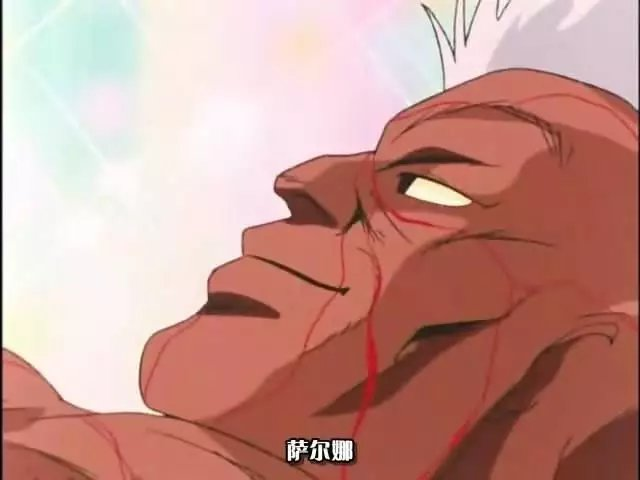
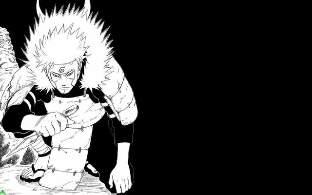
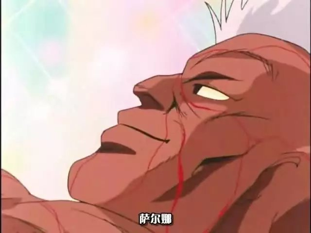

电视动画《火影忍者》改编自日本漫画家岸本齐史的同名漫画，2002年10月3日在东京电视台系列全6局、岐阜放送首播，共220话；第二季《火影忍者疾风传》自2007年2月开始播出，共500话；累计全720话。
故事成功地将原本隐藏在黑暗中，用世界上最强大的毅力和最艰辛的努力去做最密不可宣和隐讳残酷的事情的忍者，描绘成了太阳下最值得骄傲最光明无限的职业。
系列续作《博人传-火影次世代-》2017年4月播出。
[1]
火影忍者剧情简介
编辑
鸣人从小十分孤独，木叶村村民把他当成九尾的化身，当他是怪物看待。一晃十多年过去了， 鸣人考入了木叶村的忍者学校，结识了伙伴佐助和小樱。佐助是宇智波一族的末裔，当他还是小孩的时候他的哥哥——一个拥有强大实力的忍者将他们家族的人都杀死了，然后投靠了一直想将木叶村毁灭的大蛇丸，佐助从小就发誓要杀死哥哥，为家族报仇。鸣人他们在忍者学校得到了卡卡西老师的精心指点，在他的帮助下去迎接成长中的一次又一次挑战！
不久之后，在卡卡西老师的带领下，鸣人与佐助、小樱一起踏上了修行之路。等待他们的将是无穷无尽的艰险挑战，而鸣人等人也在这生与死的较量中逐渐成长起来。
火影忍者制作人员
编辑
导演：伊达勇登
系列构成：隅泽克之（1－132话）、武上纯希（133－220话）
角色设定：西尾铁也、铃木博文
美术监督：高田茂祝（Studio Wyeth）
色彩设计：川见拓也
摄影监督：松本敦穗
音乐：增田俊郎、六三四Project
音响演出：虾名恭范
音响效果：长谷川卓也
动画制作：Studio Pierrot
火影忍者主要配音
编辑*部分声优资料因暂时不明而空缺，欢迎补充。
角色
| 声优
| 中配（台湾）
| 中配（香港）
|
|---|---|---|---|
|
山本泰辅（幼年）
| |||
|
神奈延年（替代出演）
| |||
|
根本圭子（幼年）
| |||
落合留美
| |||
重松朋
| |||
白
| |||
|
菅沼久义（幼年）
| |||
河野智之
| |||
佐佐木望
| |||
宫田光
| |||
翠准子
| |||
|
津村真琴（幼年）
| |||
火影忍者剧集信息
编辑火影忍者各话标题
| 中文标题（注：对应的日文标题以各话制作中‘日文标题’为主） |
|---|
1 漩涡鸣人！拜见！
|
2 我是木叶丸！
|
3 宿敌！？佐助和小樱
|
4 训练！生存演习
|
5 丧失资格？卡卡西的结论
|
6 重要的任务！向着波之国出发
|
7 雾的暗杀者
|
8 以疼痛为誓的决心
|
9 写轮眼卡卡西
|
10 查克拉之林
|
11 存在过英雄的国家
|
12 桥上的决战 再遇再不斩
|
13 白的秘术 魔镜冰晶
|
14 最出人意料的鸣人参战
|
15 零视界之战 写轮眼崩溃
|
16 被解开的封印
|
17 白色的过去 秘密的回忆
|
18 被称为忍者的道具
|
19 再不斩随雪而逝
|
20 冲入新章！中忍试验
|
21 报上名来！强敌出现
|
22 干劲120% 锁定在NOW的挑战书
|
23 踢飞对手！九名新人全部集合
|
24 突然失格？超难的第一场试验
|
25 决定胜负！进退两难第10题
|
26-27 1小时特别篇
|
26 不能错过！死之森林进入前报道！这是木叶的学级新闻！◆
|
27 第二场考试开始！周围都是敌人！
|
28 打败它还是被吃掉！鸣人当诱饵
|
29 鸣人的反击！我才不要逃呢
|
30 觉醒的写轮眼 必杀·火遁龙火之术
|
31 意志坚持 我会至死守护你
|
32 樱花盛开 决意后的小樱
|
33 无敌阵型 猪·鹿·蝶
|
34 赤丸的恐慌 我爱罗 惊异的实力
|
35 决不能偷看 卷轴的秘密
|
36 分身对决 我才是主角啦
|
37 第二试验突破！新人9人全部集齐
|
38 合格者1/2 突如而来的预选赛
|
39 浓眉小子的妒忌！“狮子连弹”诞生！
|
40 一触即发！卡卡西VS大蛇丸
|
41 对手激突！少女内心是认真的
|
42 最好的对手 别开玩笑了！！
|
43 鹿丸退退缩缩！？女忍者们的热血之战
|
44 赤丸参战！！谁才是丧家之犬！
|
45 雏田脸红了！观客大惊 鸣人的绝招
|
46 白眼开眼！！羞怯的雏田 大胆的决意！
|
47 在自己向往的人面前！！
|
48 我爱罗粉碎！！青春！力量！爆发吧！
|
49 热血中止！终于爆发 禁断的奥义！
|
50 呜呼李洛克！这才是男人的活法！！
|
51 暗中蠢动的影子 佐助的危机！
|
52 惠比寿再现！我决不饶恕不知廉耻的家伙！◆
|
53 哎呀！等会啊 好色仙人登场
|
54 好色仙人直传 通灵之术啊！！
|
55 悲伤的思念 载有祝愿的一朵花
|
56 生或死！？传授奥义是要赌上性命的！
|
57 飞啦！跳啦！潜水啦！蛤蟆老大登场！！
|
58 接近忍者的魔手！被狙击的病室
|
59 猛烈 猛烈 猛冲刺 正赛开始了！◆
|
60 白眼VS影分身！我绝对会赢！！
|
61 毫无死角！另一种绝对防御
|
62 废物的潜力！
|
63 丧失资格！？危险！失足！波澜起伏的正式选拔赛！
|
64 云彩真是好啊…毫无干劲的男人
|
65 激战！树叶飞舞 沙子蠕动之时
|
66-67 1小时不间断的佐助大暴走！特别篇
|
66 呼唤暴风的男人 佐助的浓眉流体术
|
67 不是光迟到而已！究极奥义·千鸟诞生！！
|
68 “毁灭木叶”开始行动
|
69 等了好久了！A级任务！！
|
70 逃跑NO.1麻烦鬼不得不干！！
|
71 古今无双！“火影”级别的战斗
|
72 火影的过失 假面下的面孔
|
73 禁术奥义！“尸鬼封尽”
|
74 惊愕！我爱罗的真面目
|
75 超越极限…佐助的决断！！
|
76 月夜的暗杀者
|
77 光明与黑暗 名字叫做我爱罗
|
78 爆发 这就是鸣人的忍法帖
|
79 冲破极限～光明与黑暗～
|
80 再见了 第三代火影
|
81 朝雾之归乡
|
82 写轮眼VS写轮眼
|
83 Oh no！自来也的桃花劫 鸣人的浩劫
|
84 低吼的千鸟 怒吼吧佐助！
|
85 愚蠢的弟弟啊！仇恨吧！憎恨吧！
|
86 修行开始 我绝对要变强
|
87 毅力！被打破的水球
|
88 木叶的标记与护额
|
89 波纹
|
90 愤怒的爆发 不可饶恕
|
91 初代火影的遗产 召唤死亡的项链
|
92 YES OR NO 纲手的回答
|
93 交涉决裂
|
94 看招吧！愤怒的螺旋丸
|
95-96 传说中的三忍大活跃！1小时特别篇
|
95 第五代火影 赌上性命的战斗
|
96 三忍的僵斗
|
97 鸣人的热气追逐赛◆
|
98 放弃做忍者吧 纲手的通告
|
99 火之意志的继承者◆
|
100 热血师徒的羁绊～男人贯彻忍道的时候～
|
101 想看 想知道 想确认 卡卡西老师的真面目◆（注：改编自漫画特别篇）
|
102 难得的新任务 拯救情理 人情和茶之国◆
|
103 击沉鸣人 充满阴谋的漩涡海面◆
|
104 跑吧伊驮天！呼唤暴风雨波的那岐岛◆
|
105 终点就在眼前 雷鸣轰隆的大激斗◆
|
106 伊驮天能否到达！执着的最后冲刺◆
|
107 想和你比试！终于对峙 佐助vs鸣人
|
108 看不见的裂缝
|
109 音的诱惑
|
110-111 木叶五人众+狗狗！铁壁阵型大活跃特别篇
|
110 结成！铁壁阵型
|
111 接触～音之忍者四人众的实力～
|
112 突然间友情崩坏 鹿丸小队大危机
|
113 力量全开 燃烧吧 丁次
|
114 再见了 朋友 但我依然相信你
|
115 你的对手 就是我
|
116-117 今年继续的火影忍者！冷酷男人的热血战斗！天才忍者的大活跃特别篇
|
116 视界360度 白眼的死角
|
117 不能失败的理由
|
118 夺回～迟到的容器
|
119 失策！新的敌人
|
120 吼叫吧 咆哮吧 终极合体
|
121 各自的战斗
|
122 伪装 男子汉鹿丸 起死回生的赌局
|
123 木叶的碧绿野兽 登场
|
124 野兽爆发 跳吧 飞吧 冲吧
|
125 木叶同盟国 砂之忍者
|
126 最强的对决！我爱罗VS君麻吕！
|
127-128 给我停下来 佐助！终于追上了佐助 大爆发特别篇
|
127 执念的一击！早蕨之舞
|
128 无法传达的喊叫
|
129 兄与弟 隔若天涯
|
130 父与子 家徽的裂纹
|
131 开眼 万花筒写轮眼的秘密
|
132 朋友啊
|
133 泪的咆哮 你是我的朋友
|
134 泪雨的终结
|
135 未能信守的约定
|
136 潜入搜查！？终于到来的超S级任务◆
|
137 无法无天者的小镇 风马一族之影◆
|
138 清澈的背叛 飘渺的愿望◆
|
139 恐怖！大蛇丸之馆◆
|
140 两次鼓动 兜的陷阱◆
|
141 小樱的决心◆
|
142 监禁机关的三恶人◆
|
143 冲啊 豚豚！该是靠你的鼻子的时候了◆
|
144 新生三人小组 两人加一只◆
|
145 爆裂！新阵型猪·鹿·蝶◆
|
146 残存的野心 大蛇丸的阴影◆
|
147-148 史上最强的火影忍者特别篇 大决战 捉虫 运动会 3大祭典大活跃◆
|
147 因缘的对决！你战胜不了我◆
|
148 连赤丸都嫉妒的超级追踪能力！寻找神秘的微香虫◆
|
149 哪里不对了！？虫子怎么看都一样◆
|
150 欺骗 失算 被骗！壮绝的虫子大作战◆
|
151 燃烧吧白眼！这就是我的忍道◆
|
152 给生者的送葬曲◆
|
153 砸向内心！爱之铁拳◆
|
154 白眼的天敌◆
|
155 悄悄逼近的乌云◆
|
156 逆袭的雷牙◆
|
157 狂奔吧！生命咖喱◆
|
158 大伙儿跟我来！汗与泪的陷阱生存大挑战◆
|
159 是敌是友！？荒野的赏金猎人◆
|
160 抓获还是被抓！？御可寺的决斗◆
|
161 稀客参见 碧绿的野兽？猛兽？…珍兽？◆
|
162 白色的诅咒武士◆
|
163 谋士·红明的阴谋◆
|
164 大大迟到的帮手◆
|
165 鸣人之死◆
|
166-167 今年火影忍者仍将继续！狗年却是鸟之国！？不间断的大活跃特别篇◆
|
166 永恒的时间◆
|
167 白鹭展翅飞翔时◆
|
168 燃烧吧 水桶腰 搅一搅拉长了煮好捞上来◆
|
169 记忆 失落的页张◆
|
170 冲击 尘封的心扉◆
|
171 潜入 设下的陷阱◆
|
172 绝望 被撕碎的心◆
|
173 海战 解放的力量◆
|
174 有可能吗？名忍法·金遁之术！◆
|
175 挖这里 汪汪！寻找埋藏的珍宝◆
|
176 疾走 迷走 蜿蜒走！谁追谁逃未知◆
|
177 OH！？PLEASE❤邮递员先生◆
|
178 相遇 拥有“星”之名的少年◆
|
179 夏日星 回忆的儿歌◆
|
180 秘术 孔雀妙法的代价◆
|
181 星影 被掩埋的事实◆
|
182 再会 追昔之时◆
|
183 星燃苍穹◆
|
184 犬冢牙漫长的一天◆
|
185 木叶的传说 翁巴凶兽真的存在！！◆
|
186 志乃笑了◆
|
187 开业！！木叶搬家中心◆
|
188 不可思议 被狙击的行商人◆
|
189 地下水 无穷尽的忍具◆
|
190 白眼开！磁铁的死角◆
|
191 死的宣告 “阴天间晴”◆
|
192 井野惊叫 发福爱之伊甸园◆
|
193 万岁踢场 青春爆发！◆
|
194 怪异 被诅咒的幽灵城◆
|
195 第三超兽 最大的对手◆
|
196 泪之激斗！热血师徒对决◆
|
197 大危机！木叶11人全员集合◆
|
198 暗部束手无策 鸣人的记忆◆
|
199 偏离靶心 逐渐清晰的目标◆
|
200 现役大活发！最强助手◆
|
201 多重陷阱 崩溃的倒计时◆
|
202 本日发表！忍者们的充满汗和泪水的经典5决斗！番外篇也充满精彩的特别篇◆
|
203-205 搬家纪念！即使是周四也不要错过！爱与恨的师徒对决 上忍下忍乱入大活跃特别篇◆
|
203 红的决意 被抛弃的第8班◆
|
204 被瞄准的八云 被封印的力量◆
|
205 红的机密任务 和第三代火影的约定◆
|
206 是幻术还是真实 支配五感之人◆
|
207 本应被封印的能力◆
|
208 名器 花鸟风月之重◆
|
209 敌人是“不忍”◆
|
210 迷路森林◆
|
211 火焰的记忆◆
|
212 各自不同的道路◆
|
213 丧失的记忆◆
|
214-215 寒冬中的热血战斗！年度最后的大活跃特别篇◆
|
214 取回的现实◆
|
215 想要抹去的过去◆
|
216 消失的匠 被狙击的守鹤◆
|
217 砂之同盟国 木叶的忍者◆
|
218 被封印的砂 水虎的反击◆
|
219 被唤醒的究极兵器◆
|
220 出发旅行◆（注：有少量原作剧情）
|
※关于220话之后的动画目录，请参见词条《火影忍者疾风传》。
火影忍者各话制作
| 话数 | 日文标题 | 剧本 | 演出 | 分镜 | 作画监督 |
|---|---|---|---|---|---|
| 1 | 参上!うずまきナルト | 隅沢克之 | 伊达勇登 | 风间小太郎 | |
| 2 | 木ノ叶丸だ コレ! | 大和屋暁 | 久城りおん | まついひとゆき | 大坪幸麿 |
| 3 | 宿敌!?サスケとサクラ | 西园悟 | 林有纪 | 金冢泰彦 | |
| 4 | 试练!サバイバル演习 | 横手美智子 | みくりや恭辅 | 石山タカ明 | 大西贵子 番由纪子 大坂竹志 |
| 5 | 失格?カカシの结论 | 浦田保则 | 青木真理子 | ||
| 6 | 重要任务!波の国へ超出発! | 広平虫 | むらた雅彦 | 番由纪子 | |
| 7 | 雾の暗杀者! | 横手美智子 | 饭村正之 | まついひとゆき | 相坂ナオキ |
| 8 | 痛みに誓う决意 | 大和屋暁 | 久城りおん | 大坪幸麿 | |
| 9 | 写轮眼のカカシ | 西园悟 | 林有纪 | 新留俊哉 | 金冢泰彦 |
| 10 | チャクラの森 | 隅沢克之 | 横田和善 | まついひとゆき | 青野厚司 |
| 11 | 英雄のいた国 | 大和屋暁 | 浦田保则 | 大西贵子 | |
| 12 | 桥上决戦!ザブザ再び!! | 横手美智子 | 熊谷雅晃 | まついひとゆき | 番由纪子 |
| 13 | 白の秘术 魔镜氷晶 | 西园悟 | 饭村正之 | 川岛ひろき | 相坂ナオキ |
| 14 | 意外性NO.1 ナルト参戦! | 久城りおん | まついひとゆき | 大坪幸麿 | |
| 15 | 视界ゼロの戦い 写轮眼崩し! | 林有纪 | 金冢泰彦 | ||
| 16 | 解放された封印 | 隅沢克之 | 熊谷雅晃 | うえだひでひと | 大西贵子 大坪幸麿 |
| 17 | 白い过去 秘めた想い | 横手美智子 | 都留稔幸 | 铃木博文 兵渡胜 | |
| 18 | 忍という名の道具 | 大和屋暁 | 浦田保则 | 川岛ひろき | 风间小太郎 |
| 19 | ザブザ雪に散る… | 都留稔幸 | 铃木博文 兵渡胜 | ||
| 20 | 新章突入!中忍试験だってばよ | 広平虫 | 熨斗谷充孝 | 入好さとる | 津田昭宏 |
| 21 | 名乗れ!现れた强敌たち!! | 隅沢克之 | あさみまつお | 康村谅 | 小菅和久 |
| 22 | 気合い120% ナウでロックな挑戦状! | 大和屋暁 | 久城りおん | まついひとゆき | 大坪幸麿 |
| 23 | 蹴散らせライバル!新人9人（ルーキーナイン）全员集合 | 横手美智子 | 林有纪 | 新留俊哉 | 金冢泰彦 |
| 24 | いきなり失格?超难関の第一试験 | 西园悟 | 伊藤真朱 | 大西贵子 | |
| 25 | 出たとこ胜负!踏ん张りどころの10问目 | 広平虫 | 熊谷雅晃 | しまづ聡行 | 番由纪子 |
| 26 | 绝対必见!死の森直前ルポ!木ノ叶の学级新闻だコレ! | 隅沢克之 | 伊达勇登 | 冈崎洋美 | |
| 27 | 第二试験スタート!周りはみんな敌だらけ! | 大和屋暁 | 熨斗谷充孝 | 康村谅 | 津田昭宏 |
| 28 | 喰うか喰われるか!エサになったナルト | 西园悟 | むらた雅彦 | 兵渡胜 | |
| 29 | ナルト反撃!逃げねーんだってばよ! | 横手美智子 | 佐土原武之 | まついひとゆき | CHOL JONG KI |
| 30 | 蘇れ写轮眼!必杀・火遁龙火の术! | 広平虫 | 若林厚史 | ||
| 31 | 激まゆプラトニック!仆は死ぬまでアナタを守る!! | 西园悟 | 木村寛 | 三宅雄一郎 | 小菅和久 |
| 32 | サクラ咲く!决意の後ろ姿 | 横手美智子 | むらた雅彦 | 番由纪子 | |
| 33 | 无敌のフォーメーション!いのシカチョウ!! | 隅沢克之 | 久城りおん | 大坪幸麿 | |
| 34 | 赤丸ビックリ!我爱罗、惊异の実力 | 大和屋暁 | 熨斗谷充孝 | 南康宏 | 津田昭宏 |
| 35 | のぞき见厳禁!巻き物の秘密 | 広平虫 | 熊谷雅晃 | うえだひでひと | 金冢泰彦 |
| 36 | 分身対决!オレが主役だってばよ! | 林有纪 | 冈崎洋美 | ||
| 37 | 第二试験突破!势ぞろいルーキーナイン! | 大和屋暁 | 佐土原武之 | まついひとゆき | Choi Jong Gi |
| 38 | 合格者二分の一!?イキナリ试合だってばよ!! | 西园悟 | 伊达勇登 | 兵渡胜 | |
| 39 | ゲジまゆジェラシー!『狮子连弾』诞生! | 大和屋暁 | 木村寛 | 康村谅 | 小菅和久 |
| 40 | 一触即発!!カカシVS大蛇丸 | 広平虫 | 久城りおん | 大坪幸麿 | |
| 41 | ライバル激突!オトメ心は本気モード | 横手美智子 | 熨斗谷充孝 | 南康宏 | 津田昭宏 |
| 42 | ベストバトルはしゃーんなろー!! | むらた雅彦 | 番由纪子 | ||
| 43 | シカマルタジタジ!?くの一达の热き戦い | 隅沢克之 | 林有纪 | 金冢泰彦 | |
| 44 | 赤丸参戦!!负け犬はどっちだ | 水越保 | 熊谷雅晃 | まついひとゆき | 冈崎洋美 |
| 45 | ヒナタ赤面!観客あんぐり、ナルトの奥の手 | 大和屋暁 | 佐土原武之 | Choi Jong Gi | |
| 46 | 白眼开眼!!内気なヒナタの大胆决意! | 久城りおん | 大坪幸麿 | ||
| 47 | 憧れの人の目の前で!! | 木村寛 | 康村谅 | 小菅和久 | |
| 48 | 我爱罗粉砕!!若さだ!パワーだ!爆発だ! | 西园悟 | 都留稔幸 | 铃木博文 | |
| 49 | 热血落ちこぼれ!遂に炸裂、禁断の奥义! | 伊达勇登 | 中村宪由 | 金冢泰彦 | |
| 50 | 呜呼ロック・リー!これが男の生き様よ!! | 熨斗谷充孝 | 吉田秀之 | ||
| 51 | 闇にうごめく影 サスケに迫る危机! | 広平虫 | 林有纪 | 冈崎洋美 | |
| 52 | エビス再び!ハレンチは私が许しませんぞ! | 大和屋暁 | 久城りおん | 大坪幸麿 | |
| 53 | あいやしばらく!エロ仙人登场! | 横手美智子 | 宫原秀二 | 一白早马 | 松岛晃 |
| 54 | エロ仙人直伝 口寄せの术だってばよ!! | 隅沢克之 | 川口敬一郎 | Choi Jong Gi | |
| 55 | 切ない想い 愿いを込めた一轮 | 西园悟 | 木村寛 | 康村谅 | 小菅和久 |
| 56 | 生か死か!?免许皆伝は命悬け! | 大和屋暁 | 熊谷雅晃 | 新留俊哉 | 樱井亲良 |
| 57 | 飞んだ!跳ねた!潜った!ガマ亲分登场!! | 西园悟 | 伊达勇登 照井绫子(助手) | 中村宪由 | 金冢泰彦 |
| 58 | しのび寄る魔の手!狙われた病室 | 広平虫 | 久城りおん | 大坪幸麿 | |
| 59 | モー烈 モー追 モーダッシュ 本选开始だってばよ | 宫田由佳 | 熨斗谷充孝 | 吉田秀之 | |
| 60 | 白眼VS影分身!オレはぜってー胜つ!! | 横手美智子 | 林有纪 | 佐藤真二 | 田头真理恵 田中ちゆき |
| 61 | 死角ゼロ!もうひとつの绝対防御 | 大和屋暁 | 宫原秀二 | 一白早马 | 松岛晃 |
| 62 | 落ちこぼれの底力! | にいどめとしや | 冈崎洋美 | ||
| 63 | 失格!?キケン!前倒し!波乱含みの大本选! | 西园悟 | 木村寛 | 康村谅 | 小菅和久 |
| 64 | 云はいいなあ…やる気ゼロの男 | 横手美智子 | 久城りおん | にいどめとしや | 大坪幸麿 |
| 65 | 激突!木の叶舞い 砂うごめく瞬间（とき） | 広平虫 | まつもとよしひさ | サトウシンジ | Choi Jong Gi |
| 66 | 岚を呼ぶ男!!サスケのゲジマユ流体术! | 大和屋暁 | 伊达勇登 | まついひとゆき | 金冢泰彦 |
| 67 | だてに遅れたわけじゃない!究极奥义・千鸟诞生!! | 熨斗谷充孝 | サトウシンジ | 吉田秀之 | |
| 68 | 『木ノ叶崩し』始动! | 西园悟 | 熊谷雅晃 | まついひとゆき | 樱井亲良 |
| 69 | 待ってました!Aランク任务だってばよ!! | 広平虫 | 宫原秀二 | にいどめとしや | 松岛晃 |
| 70 | 逃げ腰NO.1 めんどくせーがやるっきゃねえ!! | 横手美智子 | 久城りおん | 大坪幸麿 | |
| 71 | 古今无双!『火影』というレベルの戦い | 大和屋暁 | 若林厚史 | ||
| 72 | 火影の过ち 仮面の下の素颜 | 広平虫 | 木村寛 | 康村谅 | 小菅和久 |
| 73 | 禁术奥义!『屍鬼封尽』 | 横手美智子 宫田由佳 | 林有纪 | 金冢泰彦 | |
| 74 | 惊愕!我爱罗の正体 | 西园悟 | にいどめとしや | 兵渡胜 | |
| 75 | 限界を越えて… サスケの决断!! | 大和屋暁 | 熨斗谷充孝 | にいどめとしや | 吉田秀之 |
| 76 | 月夜の暗杀者 | 久城りおん | アミノテツロ | 大坪幸麿 | |
| 77 | 光と闇 我爱罗という名 | 広平虫 | 宫原秀二 | にいどめとしや | 松岛晃 |
| 78 | 爆発!これぞナルト忍法帖〜〜っ!! | 西园悟 | 熊谷雅晃 | 冈崎洋美 | |
| 79 | リミットぶっちぎり!〜光と闇〜 | 木村寛 | 康村谅 | 斉藤和也 | |
| 80 | 三代目よ、永久に……!! | 大和屋暁 | 清水明 | 小柴纯弥 | 樱井亲良 |
| 81 | 朝雾の帰郷 | 広平虫 | 林有纪 | 金冢泰彦 | |
| 82 | 写轮眼VS写轮眼!! | 宫田由佳 | 久城りおん | にいどめとしや | 大坪幸麿 |
| 83 | おお、のォ?っ!自来也の女难、ナルトの灾难 | 横手美智子 | 榎本守 | アミノテツロ | 吉田秀之 |
| 84 | 念れ千鸟 吠えろサスケ! | 西园悟 | 松本刚 | 小柴纯弥 | 松岛晃 |
| 85 | 愚かなる弟よ 恨め、憎め! | 大和屋暁 | むらた雅彦 | 冈崎洋美 | |
| 86 | 修行开始 オレはぜってー强くなる! | 広平虫 | にいどめとしや | 兵渡胜 | |
| 87 | 根性!!!割れろ水风船! | 横手美智子 | 木村寛 | 康村谅 | 山本正文 |
| 88 | 木ノ叶マークと额当て | 西园悟 | 久城りおん | 一白早马 | 大坪幸麿 |
| 89 | 波纹 | 大和屋暁 | 熊谷雅晃 | アミノテツロ | 金冢泰彦 |
| 90 | 怒りバクハツ!许さねーってばよ | 松本刚 | サトウシンジ | 松岛晃 | |
| 91 | 初代火影の遗产 死を呼ぶ首饰り | 広平虫 | 熨斗谷充孝 | 小柴纯弥 | 吉田秀之 |
| 92 | YESかNOか!ツナデの回答 | 横手美智子 | むらた雅彦 | 樱井亲良 | |
| 93 | 交渉决裂!! | 西园悟 | にいどめとしや | 兵渡胜 | |
| 94 | くらえ!怒りの螺旋丸 | 大和屋暁 | 林有纪 | 一白早马 | 金冢泰彦 |
| 95 | 五代目火影 命を赌けた闘い! | 隅沢克之 | 小高义规 | 康村谅 | 山本正文 |
| 96 | 三すくみの戦い | 松本刚 | にいどめとしや | 松岛晃 | |
| 97 | ナルトの汤けむり珍道中 | 西园悟 | 熊谷雅晃 | 小柴纯弥 | 番由纪子 |
| 98 | 忍者を辞めろ!ツナデの通告 | 横手美智子 | サトウシンジ | 冈崎洋美 | |
| 99 | 火の意志を継ぐもの | 熨斗谷充孝 | にいどめとしや | 吉田秀之 | |
| 100 | 热血师弟の绊〜男が忍道を贯くとき〜 | 久城りおん | 大坪幸麿 | ||
| 101 | 见たい、知りたい、确かめたい カカシ先生の素颜 | 大和屋暁 | むらた雅彦 | 樱井亲良 | |
| 102 | いざ新任务 义理と人情と茶国を救え! | 大和屋暁 隅沢克之 | 松本刚 | にいどめとしや | 松岛晃 |
| 103 | ナルト撃沈!?阴谋うずまく大海原 | 横手美智子 西园悟 隅沢克之 | 小高义规 | 康村谅 | 山本正文 |
| 104 | 走れイダテ!岚を呼ぶ波乱のナギ岛!! | 隅沢克之 大和屋暁 広平虫 | 林有纪 | 朝井圣子 金冢泰彦 | |
| 105 | ゴール直前!雷鸣とどろく大激闘 | 大和屋暁 西园悟 隅沢克之 | 熊谷雅晃 | 金冢泰彦 冈崎洋美 | |
| 106 | 届くかイダテ!执念のラストスパート!! | 隅沢克之 | 熨斗谷充孝 | 一白早马 | 吉田秀之 |
| 107 | オマエと戦いたい!ついに激突、サスケVSナルト | にいどめとしや | 兵渡胜 | ||
| 108 | 见えない亀裂 | 大和屋暁 | 松本刚 | 一白早马 | 松岛晃 |
| 109 | 音の诱い | 横手美智子 | サトウシンジ | 番由纪子 | |
| 110 | 结成!鉄壁のフォーメーション | 広平虫 | むらた雅彦 | 樱井亲良 | |
| 111 | 接触〜音四人众の実力〜 | 小高义规 | 康村谅 | 山本正文 | |
| 112 | イキナリ仲间割れ!?シカマル小队大ピンチ | 大和屋暁 | 林有纪 | 金冢泰彦 | |
| 113 | パワー全开!燃えろチョウジ | 西园悟 | 清水明 | にいどめとしや | 吉田秀之 |
| 114 | さらば友よ…!それでもオレは信じてる | 熊谷雅晃 | 冈崎洋美 | ||
| 115 | お前の相手はこのオレだ! | 横手美智子 | 松本刚 | 一白早马 | 桥本英树 |
| 116 | 视界360度 白眼の死角 | 広平虫 | サトウシンジ | 番由纪子 | |
| 117 | 负けられない理由 | 大和屋暁 | にいどめとしや | 兵渡胜 | |
| 118 | 夺还〜间に合わなかった器 | 隅沢克之 | 林有纪 | 康村谅 | 金冢泰彦 |
| 119 | 失策!新たなる敌 | 清水明 | 一白早马 | 吉田秀之 | |
| 120 | 念れ!吼えろ!究极のタッグ | むらた雅彦 | 樱井亲良 | ||
| 121 | それぞれの闘い | 大和屋暁 | 松本刚 | 一白早马 | 桥本英树 |
| 122 | フェイク!男シカマル 起死回生の赌け | 横手美智子 | 清水明 | まついひとゆき | 冈崎洋美 |
| 123 | 木ノ叶の碧き野獣 见参! | 広平虫 | 熊谷雅晃 | 金冢泰彦 | |
| 124 | 野獣炸裂!弾けろ吹っ飞べ突き抜けろ! | 西园悟 | サトウシンジ | にいどめとしや | 番由纪子 |
| 125 | 木ノ叶同盟国 砂の忍 | 大和屋暁 | 林有纪 | まついひとゆき | 吉田秀之 |
| 126 | 最强対决!我爱罗VS君麻吕!! | 隅沢克之 | にいどめとしや | 兵渡胜 | |
| 127 | 执念の一撃!早蕨の舞 | 影山楙伦 | Yang Kwang Seok | ||
| 128 | 届かない叫び | 松本刚 | 外崎春雄 | ||
| 129 | 兄（イタチ）と弟（サスケ） 远过ぎる存在 | むらた雅彦 | 樱井亲良 朝井圣子 | ||
| 130 | 父と子 ひび割れた家纹 | 清水明 | にいどめとしや | 冈崎洋美 | |
| 131 | 开眼 万华镜写轮眼の秘密 | 熊谷雅晃 | 金冢泰彦 | ||
| 132 | 亲友（とも）よ! | サトウシンジ | 番由纪子 | ||
| 133 | 涙の咆哮!オマエはオレの友达だ | 若林厚史 | |||
| 134 | 涙雨の结末 | 本多康之 | サトウシンジ | 尾形健一郎 | |
| 135 | 守れなかった约束 | にいどめとしや | 兵渡胜 | ||
| 136 | 潜入捜査!?遂にきたきた超S级任务 | 武上纯希 | 影山楙伦 | Yang Kwang Seok | |
| 137 | 无法者の街 ふうま一族の影 | 林有纪 | サトウシンジ | 金冢泰彦 | |
| 138 | 清き裏切り はかなき愿い | 熊谷雅晃 | にいどめとしや | 冈崎洋美 | |
| 139 | 恐怖!大蛇丸の馆 | むらた雅彦 | 朝井圣子 | ||
| 140 | 二つの鼓动 カブトの罠 | 本多康之 | 黒津安明 | 尾形健一郎 | |
| 141 | サクラの决意 | サトウシンジ | 番由纪子 | ||
| 142 | 厳戒施设の三悪人 | 広平虫 | 影山楙伦 | Yang Kwang Seoch | |
| 143 | 走れトントン!お前の鼻が頼りだってばよ | 林有纪 | にいどめとしや | 金冢泰彦 | |
| 144 | 新生三人一组（スリーマンセル） 二人と一匹! | 熊谷雅晃 | 冈崎洋美 | ||
| 145 | 炸裂!ニューフォーメーションいのシカチョウ | 刚田隼人 | にいどめとしや | 尾形健一郎 | |
| 146 | 残された野望 大蛇丸の影 | 宫田由佳 | むらた雅彦 | 朝井圣子 | |
| 147 | 因縁の対决!オマエにオレは倒せねえ | 松本刚 | 百ノ飞砾 | 番由纪子 | |
| 148 | 超追尾力に赤丸も嫉妬!幻の微香虫を探せ | 西园悟 | 田中ちゆき | 金冢泰彦 | |
| 149 | どこが违うのさ!?虫って同じに见えないか | 影山楙伦 | Kim Jim Goo | ||
| 150 | だまして化かしてだまされて!壮绝ムシムシ大バトル | にいどめとしや | 兵渡胜 | ||
| 151 | 燃えよ白眼!これが私の忍道よ | 都留稔幸 | 铃木博文 | ||
| 152 | 生あるものへの葬送曲 | 铃木やすゆき | 刚田隼人 | サトウシンジ | 尾形健一郎 |
| 153 | 心に届け!爱の鉄拳 | 武上纯希 | 熊谷雅晃 | 百ノつぶて | 冈崎洋美 |
| 154 | 白眼の天敌 | 铃木やすゆき | 林有纪 | にいどめとしや | ウクレレ善似郎 |
| 155 | 忍び寄る暗云 | 武上纯希 | 影山楙伦 | Jim Jin Goo Eum lk Hyoun | |
| 156 | 逆袭の雷牙 | 铃木やすゆき | 刚田隼人 | サトウシンジ | ウクレレ善似郎 |
| 157 | 走れ!!!生命のカレー | 武上纯希 | むらた雅彦 | 朝井圣子 | |
| 158 | みんなオレについて来い!汗と涙のタクラミ大サバイバル | 広平虫 | 松本刚 | にいどめとしや | 冈野秀彦 津熊健徳 |
| 159 | 敌か味方か!?荒野の赏金稼ぎ | 铃木やすゆき | 熊谷雅晃 | 百ノつぶて | 冈崎洋美 |
| 160 | 获るか获られるか!?オッケー寺の决斗（けっとう） | 林有纪 | にいどめとしや | ウクレレ善似郎 | |
| 161 | 珍客见参碧の野獣?猛獣?…珍獣? | 刚田隼人 | 津田昭宏 斎藤新明 | ||
| 162 | 白き呪い武者 | 武上纯希 | 福田きよむ | 影山楙伦 | Kim Jin Goo Eum lk Hyoun |
| 163 | 策士・红明の思惑 | 菅井嘉浩 | 百ノつぶて | 森田実 | |
| 164 | 遅すぎた助っ人 | 松本刚 | サトウシンジ | 冈野秀彦 津熊健徳 | |
| 165 | ナルト死す | 熊谷雅晃 | にいどめとしや | 冈崎洋美 | |
| 166 | 止まったままの时间 | 西村大树 | 小林一三 | Kim Bae Hoon | |
| 167 | 白鹭の羽ばたく时间 | 刚田隼人 | 百ノつぶて | ウクレレ善似郎 | |
| 168 | 燃えろ寸胴!混ぜて伸ばして茹で上げろ!! | 西园悟 | 福田きよむ | 影山楙伦 | Kim Jin Goo Eum lk Hyoun |
| 169 | 记忆 失われた页（ページ） | 宫田由佳 | にいどめとしや | 兵渡胜 | |
| 170 | 冲撃 闭ざされた扉（ドア） | 武山笃 | 森田実 | ||
| 171 | 潜入 仕组まれた罠（トラップ） | 木下ゆうき | 百ノつぶて | 金冢泰彦 | |
| 172 | 绝望 引き裂かれた心（ハート） | 宫田由佳 武上纯希 | 西村大树 | 小林一三 | Kim Sang Yeob |
| 173 | 海戦 解き放たれた力（パワー） | 熊谷雅晃 | にいどめとしや | 冈崎洋美 | |
| 174 | ありえねーってばよ!セレブ忍法・金遁の术 | 広平虫 | 松本刚 | ウクレレ善似郎 冈野秀彦 | |
| 175 | ここ掘れワンワン!埋蔵金を探せ | 西园悟 | 福田きよむ | 影山楙伦 | Eum lk Hyun Kim Seong Beum |
| 176 | 疾走、迷走、ジグザグ走!追って追われて间违えて | 刚田隼人 | サトウシンジ | 田中ちゆき | |
| 177 | OH!?ぷりーず♥みすたーぽすとまん | 铃木やすゆき | 木村寛 | 森田実 | |
| 178 | 出会い 『星』の名を持つ少年 | 武上纯希 | 浊川敦 | 奥田诚治 | KIM SANG YEOP |
| 179 | ナツヒボシ 思い出の子守呗 | 熊谷雅晃 | にいどめとしや | 金冢泰彦 | |
| 180 | 秘术 孔雀妙法の代偿 | にいどめとしや | 兵渡胜 | ||
| 181 | 星影 葬り去られた真実 | 福田きよむ | 影山楙伦 | Eum lk Hyun | |
| 182 | 再会 残された时间 | 木下ゆうき | ウクレレ善似郎 | ||
| 183 | 星は辉きを増して | 木村寛 | 林隆文 | 森田実 | |
| 184 | 犬冢キバのなが〜い一日 | 広平虫 | 刚田隼人 | 久城りおん | 冈野秀彦 津熊健徳 |
| 185 | 木ノ叶隠れの伝说 オンバアは実在した!! | 铃木やすゆき | 浊川敦 | 奥田诚治 | Kim Sang Yeop |
| 186 | 笑うシノ | 西园悟 | 熊谷雅晃 | サトウシンジ | 冈崎洋美 |
| 187 | 开业!!木ノ叶引越センター | 吉田伸 | 福田きよむ | 影山楙伦 | Eum lk Hyun |
| 188 | 不可解 狙われた行商人 | 木下ゆうき | 金冢泰彦 | ||
| 189 | 地下水 无尽蔵の忍具 | 木村寛 | 林隆文 | 森田実 | |
| 190 | 白眼は见た!磁気使いの死角 | 林有纪 | にいどめとしや | ウクレレ善似郎 | |
| 191 | 死の宣告 『くもり时々晴れ』 | 浊川敦 | 奥田诚治 | Kim Sang Yeob | |
| 192 | いの绝叫!ポッチャリ♥パラダイス | 宫田由佳 | 福田きよむ | 影山楙伦 | Eum lk Hyun |
| 193 | ビバ道场破り!青春はバクハツだ | 西园悟 | 刚田隼人 | にいどめとしや | 冈野秀彦 津熊健徳 |
| 194 | 怪奇 呪われた幽霊城 | 铃木やすゆき | 清水明 | 十文字景 | 金冢泰彦 |
| 195 | 第三の超獣 最大のライバル | 武上纯希 | 木村寛 | サトウシンジ | 森田実 |
| 196 | 涙の激突!热血师弟対决 | 熊谷雅晃 | 冈崎洋美 | ||
| 197 | 大ピンチ!木ノ叶の11人全员集合 | 西园悟 | 浊川敦 | 奥田诚治 | Kim Dae Hoon |
| 198 | 暗部もお手上げ ナルトの记忆 | 木下ゆうき | にいどめとしや | ウクレレ善似郎 | |
| 199 | 的外れ 见えてきた标的（ターゲット） | 福田きよむ | 影山楙伦 | Eum lk Hyun | |
| 200 | 现役バリバリ!最强の助っ人 | 刚田隼人 | 十文字景 | 堀越久美子 津熊健徳 | |
| 201 | 多重トラップ 崩壊のカウントダウン | 熨斗谷充孝 | にいどめとしや | 铃木伸一 | |
| 202 | 本日発表!忍者たちの汗と涙の名胜负ベスト5!お楽しみの番外编もあるってばよスペシャル | 宫田由佳 | 伊达勇登 | 朝井圣子 | |
| 203 | 红の决断 とり残された第8班 | 武上纯希 | 清水明 | 十文字景 | 金冢泰彦 |
| 204 | 狙われた八云 封印された能力 | 木村寛 | 高柳哲司 | 森田実 | |
| 205 | 红の极秘任务〜三代目との约束〜 | 熊谷雅晃 | 田中ちゆき | 冈崎洋美 | |
| 206 | 幻术か现実か 五感を制するもの | 浊川敦 | 奥田诚治 | Kim Dae Hoon | |
| 207 | 封じられたはずの能力（ちから） | 木下ゆうき | にいどめとしや | ウクレレ善似郎 | |
| 208 | 名器 花鸟风月の重さ | 広平虫 | 福田きよむ | 影山楙伦 | Eum Ik Hyun |
| 209 | 敌は『不忍（しのばず）』 | 铃木やすゆき | 刚田隼人 | 十文字景 | 津熊健徳 堀越久美子 |
| 210 | 迷いの森 | 熨斗谷充孝 | 佐々木守 | 铃木伸一 | |
| 211 | 炎の记忆 | 清水明 | 十文字景 | 金冢泰彦 | |
| 212 | それぞれの道 | 木村寛 | 高柳哲司 | 森田実 | |
| 213 | 失われた记忆 | 吉田伸 | 熊谷雅晃 | 十文字景 | 冈野秀彦 拙者五郎 |
| 214 | 取り戻した现実 | 浊川敦 | Kim Dae-Hoon | ||
| 215 | 消し去りたい过去 | 木下ゆうき | にいどめとしや | ウクレレ善似郎 | |
| 216 | 消えた匠 狙われた守鹤 | 武上纯希 | 福田きよむ | 影山楙伦 | Eum Ik Hyun |
| 217 | 砂の同盟国 木ノ叶の忍 | 铃木やすゆき | 刚田隼人 | 十文字景 | 堀越久美子 津熊健徳 |
| 218 | 封じられた砂 水虎の反撃 | 冈崎幸男 | にいどめとしや | 铃木伸一 | |
| 219 | よみがえった究极兵器 | 武上纯希 | 清水明 | 十文字景 | 拙者五郎 冈野秀彦 |
| 220 | 旅立ち | 木村寛 | 高柳哲司 | 森田実 | |
火影忍者分集剧情
- 第1集 漩涡鸣人登场
- 鸣人刚出场就让我们吓了一跳，伊鲁卡追着逃课的他满村子跑。好不容易抓住了鸣人，但是在变身的考核上，鸣人却变出了一个裸女，并美其名曰是色诱之术。他是一个十足的钓车尾，但是他一点都不讨人厌，尽管他不被认同，但是他不退缩，永不服输，爱吃拉面，爱恶搞，而这样的人，才是我们心中的鸣人，感动从这一刻开始了。
- 第2集 我是木叶丸
- 木叶村每一代的首领被称为“火影”，只有忍者中实力最强者才能拥有此殊荣。“猿飞”正是现在的第三代火影，他有个孙子叫做“木叶丸”。好不容易才从忍者学校毕业的鸣人刚从学校拿到忍者证书，就遇到了木叶丸。木叶丸开口就叫鸣人“老大”，而且一直跟随在鸣人身后。这是因为，只有鸣人没有把他当做“火影的孙子”来特别对待，而木叶丸的目标就是要成为受人尊敬的“火影”……
- 第3集 宿敌！佐助和小樱
- 鸣人终于成为忍者啦，因为任务需要，鸣人必须同另外两个人组成三人一组的小队。与他分到同组的是同班的“宇智波佐助”及“春野樱”。鸣人非常喜欢可爱的小樱，可是小樱却暗恋着佐助。更糟糕的是，比起鸣人，佐助不但帅气而且是实力拔群的优等生。于是，郁闷的鸣人为了接近小樱，又想出了一个鬼主意…
- 第4集 考验！求生的演练
- 刚成立的第七组在教室里等待卡卡西的到来，可是迟到的卡卡西实在让人受不了，于是鸣人干脆借此机会设置一个小陷阱捉弄一下卡卡西。中计的卡卡西表示对三人的印象还挺差的，于是，在大家自我介绍完毕以后，卡卡西提出毕业的27名忍者中只有9人可以成为下忍，而决定谁能成为下忍的毕业测试将在第二天举行。可是，面对如此重要的考试，卡卡西再次迟到了。
- 第5集 不及格？卡卡西的结论
- 卡卡西安排的这场考试实在是太无情了，现如今在鸣人他们面前的卡卡西与之前的他判若两人。鸣人两三就被卡卡西撂倒了，连最强新人的佐助也无法招架卡卡西的进攻，无计可施的小樱只能到处躲藏。在上忍卡卡西的实力面前，穷途末路的三人体会到了实力的差距，这样下去三人就要都回去忍者学校了，为此三人倍感焦急，然而卡卡西在这场考验中真正的目的并不是为了选拔下忍。
- 第6集 重要任务！往波之国出发
- 第七组正式的任务了，不过，所谓的任务无非是寻找迷路的小猫之类的无聊任务。一肚子不满意的鸣人终于忍不住冲到火影面前大肆抱怨。虽然火影对于任性的鸣人相当烦恼，但是也察觉到了鸣人的十足干劲，于是将一项重要的任务委托给了他们。这项新任务是把叫作“达兹纳”的人护送到“波之国”。对于初次真正的护卫任务，鸣人充满了干劲......
- 第7集 雾之暗杀者
- 终于抵达波之国的鸣人一行，了解到这个国家被一个叫“卡多”的奸商支配着。先前出现的劫道者是想要取达兹纳性命的刺客，而且得知下一个敌人将是被称为“沉默杀手”的“桃地再不斩”。鸣人正为意外出现的强敌而兴奋，卡卡西却警告他：“这不是你所能战胜的对手”。三人从一反常态的卡卡西身上感觉到了浓烈的杀气……
- 第8集 以痛发誓的决心
- 同再不斩发生争斗的卡卡西瞬间移动到再不斩的身后，用刀刃直指再不斩的喉结，卡卡西本以为这样就能封锁住再不斩的攻击，可是他想多了。卡卡西控制住的仅是再不斩的水分身，进攻失败的卡卡西被再不斩封在了“水牢”之中。岸上的鸣人、小樱和佐助，面对再不斩的进攻束手无策，他们三人的命运将如何发展下去呢？
- 第9集 写轮眼的卡卡西
- 鸣人和佐助的配合成功将水牢中的卡卡西解救出来，使卡卡西再次与再不斩交锋，卡卡西利用写轮眼的能力一瞬间将再不斩的“水遁大瀑布”复制过来并反击，之后再不斩的每一次行动以及忍术都被卡卡西预读。正在卡卡西准备给再不斩最后一击的时候，不知从哪里飞来的千本直刺再不斩的咽喉，此时，再不斩气绝身亡。随后一名自称是“追捕忍者”的神秘少年突然出现了。
- 第10集 查克拉的森林
- 第七组终于将达兹纳先生平安护送到家，因为使用写轮眼而精力耗尽的卡卡西，身体暂时无法动弹。与此同时，卡卡西提出了一个疑问，追捕忍者应该在杀死对象的当场把尸体处理掉，但是为什么那个少年把再不斩的尸体带走了？于是经过他的思索，他认为那个孩子和再不斩是一伙的。于是，为了预防再不斩再度进攻，卡卡西为鸣人等人制订了一套在短时间里提升实力的修行计划。
- 第11集 英雄的国度
- 小樱意外得知了达兹纳拼命也想完成那座跨海大桥的真正原因，因为达兹纳确信只要完成这座桥，就能够从支配海运交通的卡多手中拯救大家。另一方面，鸣人和佐助正在森林里修炼自己，回到达兹纳家时的二人都已经变得伤痕累累。伊那利看着佐助和鸣人冷冷地说了一句：“你们是赢不了卡多的”。原来伊那利性格大变的原因与他养父的死因有关……
- 第12集 桥上的决战．再不斩再现
- 鸣人在森林中遇到了一个谜一样的人物，鸣人告诉这个神秘的人物，为了要成为被村子人认可的伟大忍者，他要变得更强。而这个神秘的人却告诉他，人在想保护重要东西的时候，就可以变的很坚强。但是，辛苦训练回到达兹纳先生家的鸣人，却遭到了伊那利的言语攻击，愤怒的鸣人毫不留情的训斥了伊那利后就休息去了。可是由于鸣人体力耗尽的缘故，他没有赶上第二天保护达兹纳先生的行动。
- 第13集 白的秘术．魔镜冰晶
- 终于到了跟再不斩再次战斗的时间了，之前的面具少年也跟再不斩一起出现。再不斩等人看了佐助一眼便看穿了他拥有的实力，而佐助也识破了面具少年绝非等闲之辈。之后，仿佛是被互相吸引似的，佐助与少年的展开战斗。与此同时，卡多的部下闯入达兹纳的家，想抓津奈美作为人质，面对妈妈要被带走的危急时刻，伊那利却只是害怕得发抖，但当伊那利突然想起了鸣人说的话时，他终于鼓起了勇气面对敌人。
- 第14集 意外性第一的鸣人参战
- 在白忍法所制造的魔镜冰晶中，佐助陷入大危机。就在这时候鸣人不适时宜的出现，让佐助的作战计划泡汤了。在魔镜冰晶里，鸣人和佐助被白压倒性的速度所牵制，毫无还手之力。原来白是因为承继了被称为“血继限界”的异能才会拥有如此强大的力量。白告诉佐助和鸣人，为了保护对他非常重要的人，他必须把他们俩人杀死！
- 第15集 视线为零的战斗．封锁写轮眼
- 卡卡西很清楚知道，欠缺实战经验的鸣人和佐助，是无法打倒经历无数次生死战斗的白。为今之计，只有靠自己速战速决，杀死再不斩后，帮助佐助和鸣人打倒白。可是就在卡卡西准备再次使用写轮眼的时候，再不斩却自信的说“写轮眼已经不再管用了”。再不斩也是个身经百战的忍者，只是看了一次写轮眼，就已经领悟出破解的方法。到底再不斩对抗卡卡西写轮眼的策略是什么呢？
- 第16集 被解放的封印
- 佐助和鸣人在白的魔法冰晶里陷入了苦战，但是此时的佐助也逐渐捕捉到了白的动向。与此同时，在大桥上同再不斩战斗的卡卡西，由于雾的影响，无法使用写轮眼，第七组的两边都陷入了危机。冰晶水晶里的佐助虽然能够一边掩护，一边对抗白，可是鸣人的身体状况已不容乐观。白深深的意识到，这场战斗不宜拖得太久，于是他开始集火受重伤的鸣人，就在这个时候，佐助居然做出了一个惊人的决定......
- 第17集 白色的过去．隐藏的回忆
- 鸣人眼睁睁的看着佐助为了救自己身受重伤，生死不详。愤怒使鸣人激活了体内的九尾力量，凭借着这股力量，他不仅躲开了白的攻击，还以一记漂亮的重拳击飞了白。终于突破了魔法冰晶的鸣人，面对一心求死的白，却迟迟下不了手。与此同时，陷入雾中的卡卡西，通过召唤自己的忍犬抓住了再不斩，并启动了自创的忍法“雷切”。
- 第18集 名为忍者的工具
- 原本一心求死的白，突然感觉到再不斩遇到了危险，便瞬移到了再不斩的面前，替他挡下了致命的一击。由于再不斩的行动被限制，大桥上的雾终于散去了，小樱看到了昏迷不醒的佐助，情不自禁的痛哭起来。此时，逃过一劫的再不斩不断对卡卡西发起攻击，可是无论他使用怎样的招数，都无法赢过卡卡西，反而被卡卡西废了双臂。
- 第19集 在雪中离去的再不斩
- 双臂被废的再不斩，被卡多无限嘲讽，看着白的尸体被卡多践踏，再不斩终于忍不住了，坦白面对自己情感的再不斩，决定杀了践踏白尸体的卡多。尽管卡多带了一大票人围堵再不斩，但是再不斩还是突出重围，刺杀了卡多。可是，事情并没有因为卡多的死而完结，一群被卡多召集的人，以拿不到报酬为由，决定拿走整个村子里面值钱的东西，就在这个时候，整个村的村民们团结了起来，一起抵御外敌。
- 第20集 晋级中忍的考试
- 第七组的孩子们刚从波之国回到木叶村，鸣人就一天到晚的不满意。虽然他们解决了被委派的任务，但是他们也同样见识到了村子以外的世界，在此次任务中，他们同再不斩和白发生争斗的事情，让他们深刻的感受到自己的弱小。就在这时候，其他村庄的忍者们陆陆续续的聚集到木叶村，原来他们是各村庄送来参加中忍考试的考生。
- 第21集 报上名来！现身的强敌们！
- 在中忍考试的推荐会上，伊鲁卡强烈反对卡卡西推荐鸣人、小樱和佐助参加中忍考试，认为孩子们还小，需要更多的经验才行，但是卡卡西却驳回了伊鲁卡的请求。火影考虑到伊鲁卡所提到的原因，特地为这一届的新人下忍准备了一场中忍考试前的预备考试。预备考试在下忍们毫无防备的情况下开始了，先是萌黄在鸣人面前被一个怪人掳走，然后，佐助一反常态提出和小樱散步，这场预备考试到底会变成怎样呢？
- 第22集 气势120%！赤手空拳的挑战
- 浓眉大眼的李洛克出现在等待中忍考试的佐助、小樱和鸣人面前，并要求和佐助一战，面对身为宇智波一族的佐助，小李战意高昂。佐助接受了他的挑战，但是，战斗刚刚开始，佐助就被小李使用的连环招打得只有防守的份儿。佐助打算用写轮眼看穿小李的招式，可是，他惊讶的发现写轮眼居然无法将小李的招式看破，踌躇的佐助终于发现到小李使用的是单纯的体术。
- 第23集 踢掉对手！九位新人全员到齐
- 鸣人、佐助和小樱正式申请参加中忍考试。这中忍考试是以小组为单位接受测试的，缺少任何一人也不被允许。所以同伴间的合作比什么都来得重要。进入考试教室，那里已经有很多考生。鸣人他们差点要被那里的气氛吞噬。在这人群中，他们遇上了药师兜，兜已经接受了很多次的中忍考试，可惜一直都未能通过，但他扬言自己收集了大量的考生资料。看了兜的资料后，鸣人他们都明白到，来考试的下忍们都是拥有极强实力的人，他们都是背负着各村子声誉的精英份子。
- 第24集 马上开始淘汰？超难的第一场考试
- 中忍考试的第一场居然是笔试，这可让鸣人头疼了，而且最善于操控人心的特别忍者森乃伊比喜会作为这场主考官，他宣布考试的成绩将以小组的总成绩来计算，如果有人作弊被发现五次，那么整个组都将被踢出考试，不仅如此，只要有一个队员考了零分，整个组也会被踢出这场考试。面对这场残酷的考试，鸣人该如何应对呢？第七组是否能顺利参加中忍考试呢？
- 第25集 决定生死的第十题
- 终于到了这次考试最难的第10条问题。在宣布这条问题前，伊比喜附加了一条严苛而又毫无道理的规则，任何一名下忍只要答错这道问题，这一场考试就算作不合格，而且永远失去参加中忍考试的资格。很多考生都忍受不了这压力而陆陆续续离开考场。就在这时候，小樱突然想到，要是鸣人最后解答不了这道问题的话会怎样呢？
- 第26集 进入死亡森林前的报导！
- 木叶村第三代火影的孙儿木叶丸出现在中忍考试会场，原来他是跑来这里收集资料的，因为这次木叶丸的任务就是替忍术学校的学级新闻做一次中忍考试的特集报导。视鸣人为老大的木叶丸决定采访鸣人，可是在鸣人口中的佐助却是洋相百出，不仅如此，就连他所执行的任务都是他的糗镜头联播，面对这样的采访对象，木叶丸的报导能完成吗？
- 第27集 第二场考试开始！四周围全都是敌人
- 中忍的第二场考试开始了，这场考核名义上是一场生存能力测试，实际上则是一场不择手段的卷轴争夺战，每组手中都会持有一个卷轴，分别是天卷轴和地卷轴，只有同时集齐两个卷轴后到达高塔的小组，才算通过第二场考试，这场考试历时五天，并且这场考试不许中途放弃。由于这种特殊的规定，每个人身边都充斥着敌人，面对随时可能丧命的考试，第七组的人改如何应对呢？
- 第28集 是吃还是被吃！被蛇吞掉的鸣人
- 第二场考试才开始不久，第七组就经历了一场考验，鸣人暂时离队后归来，却遭到了佐助的拳脚相加，原来这个鸣人是伪装的。为了预防有人继续利用变身术伪装队员骗取卷轴，第七组决定给自己设定一个暗号。但是这个暗号却被一个身份不明的人物听到了，没想到这个神秘人物竟然变身成鸣人的样子混进第七小组，并以强烈的杀气使佐助和小樱丧失了战斗的能力。
- 第29集 鸣人的反击！有胆就不要逃！
- 草忍的实力远远超越了佐助和小樱，佐助因为这巨大的实力差距而感到死亡的恐惧，就在这时候，鸣人突然出现开始斥责佐助。看见佐助为了保命而交出卷轴，鸣人非常生气的向佐助挥起了拳头，并且告诉佐助，即使交出卷轴，对方也没有想要放过他们的意思，话音刚落，鸣人就冲向草忍。在战斗中愤怒的鸣人，开始激发出体内隐藏的力量......
- 第30集 甦醒吧写轮眼！必杀．火遁龙火之术
- 鸣人因为和草忍对战已经精疲力尽，而佐助意识到自己之前行为的软弱，终于决定接替鸣人继续同这个草忍战斗下去。佐助开启了写轮眼，向草忍发起了进攻，尽管草忍的攻击速度异常快，但是每一个动作都被佐助的写轮眼看穿了。最终佐助以写轮眼操风车三之大刀控制住了草忍，配合火遁龙火之术使草忍身陷火海，可是面对这样的猛烈攻击，草忍只是被烧掉了伪装身份的外皮，这名草忍究竟是何方神圣？
- 第31集 浓眉小子的真情！到死我都会保护你
- 红豆在考场中邂逅了大蛇丸，并得知大蛇丸已经找到了佐助，并给佐助种下了咒印，并威胁红豆不许阻止中忍考试，不然村子就会受到威胁。与此同时，佐助和鸣人因为和大蛇丸的战斗不省人事，而小樱却遭到了音忍三人组的围攻，关键时刻，小李出现了。为了实现这辈子都会守护小樱的承诺，小李不惜违背阿凯老师的命令，使用了表莲华，可是，小李一人毕竟难敌对方三人。
- 第32集 樱花开了！决心的背影
- 小李终于不敌音忍三人，被打倒了。因为不能被保护自己真爱的小樱，小李一直处于悔恨中，而此时，小樱明知道佐助是最喜欢长发女孩子的，但是受到了小李的影响，小樱为了能够保护身后的两名队友，切断了自己的长发，全力同音忍战斗，可是由于实力悬殊，小樱也败下阵来，在这性命攸关的时候，井野、鹿丸和丁次三人组出现了。
- 第33集 无敌的阵容！猪鹿蝶
- 就在猪鹿蝶三人同音忍战斗陷入苦战的时候，宁次和天天赶来了，本以为宁次会出手为小李报仇，可是宁次突然解除了白眼的效果。原来是中了咒印的佐助醒来了，被咒印缠身的佐助散发着一种令人窒息的查克拉。不知死活的音忍萨克，居然向此时的佐助发起了进攻，没想到佐助不仅躲过了萨克的攻击，还反手擒住了萨克，并将萨克的双手折断，此时的佐助，陷入了杀戮的快感中。
- 第34集 受到惊吓的赤丸！我爱罗的惊异实力
- 就在音忍对佐助小组的袭击结束的同时，牙那边也发生了一些状况。在牙、志乃和雏田赶往高塔的时候，雏田发现了我爱罗一行人的踪迹，本着多收集卷轴的目的，牙带领队友围观了一场我爱罗和雨忍之间的战斗。面对雨忍的强力攻击，我爱罗一点也不畏惧，就在雨忍认为他的攻击无懈可击的时候，我爱罗已经着手反击了。
- 第35集 严禁偷看！卷轴的秘密！
- 距离第二场考试还有一天就要结束了，第七组陷入了恐慌之中，趁着佐助打水的时候，鸣人提出偷偷拆开卷轴偷看里面的内容，然后根据地卷轴复制一份天卷轴来迷惑考官，没想到一项谨慎的小樱居然同意了鸣人的建议，和鸣人偷偷拆卷轴。幸好在鸣人拆卷轴的瞬间，被兜及时阻止了，兜将擅自打开卷轴的后果告诉了鸣人他们。不过，得知兜已经将两部卷轴收集齐了，佐助提出和兜决斗，抢夺卷轴......
- 第36集 分身对决！我才是主角喔
- 鸣人他们决定在抵达终点之塔之跟兜一起行动，可是，中途却遇上了雨忍者村的忍者所布下的幻术陷阱。因为鸣人他们一直在相同的地方徘徊，所以被削弱了不少的体力，而后又被敌人幻术制造出来的分身围困，陷于苦战。虽然鸣人把对方的分身一个个打倒，却不能把他们消灭。另一方面，佐助想利用写轮眼的力量识破对方的正体，但是却受到大蛇丸所施的咒印影响，不能顺利使出力量。着急的鸣人决定使出影分身术，一口气把对访的幻影打倒。
- 第37集 通过第二场考试气势如宏的九位新人
- 鸣人等人好不容易到达终点之塔后打开天地卷轴后，伊鲁卡出现了。伊鲁卡宣布第七组全员顺利通过第二场考试。可是，除了考试合格外，伊鲁卡还有一件非要向他们传达不可的事情，那就是身为中忍的心得。就在伊鲁卡开始谨慎的向忍术学校的孩子们说明情况的时候，红豆把遇见大蛇丸一事报告给了火影。虽然火影知道了大蛇丸的目的是佐助，但还是决定继续中忍选拔考试。
- 第38集 半数淘汰！突然就考试了喔
- 由于通过第二场考试的人数太多了，火影决定在第三场考试之前展开一场预选赛，内容则是一对一的对决，胜者将参加第三场考试。令人没想到是，兜在每一次中忍考试的第三场考试之前都会弃权，而且在进入忍者学校之前，他已经开始执行任务了。就在佐助和鸣人还对兜的弃权不理解的情况下，第一场预选赛开始了，这场比赛是由赤胴铠对战佐助，受伤的佐助是否能战胜赤胴铠呢？
- 第39集 浓眉小子吃醋了！“狮子连弹”诞生
- 由于大蛇丸咒印的影响，佐助无法使用自己的查克拉，而赤胴铠则凭借自己特有的能力，不断吸收佐助的查克拉，比赛才开始，佐助就已经陷入了苦战。虚弱的佐助利用赤胴铠的破绽勉强躲过了他的攻击，就在赤胴铠使用最后一招攻击佐助的时候，佐助不仅强行压制住了大蛇丸咒印的力量，还利用自己创造的招数打败了赤胴铠，获得了第三场考试的晋级名额。
- 第40集 一触即发！卡卡西对大蛇丸
- 在卡卡西完成对佐助身上咒印的封印后，大蛇丸出现了。与此同时，曾经被佐助折断右手的音忍萨克在和油女志乃的战斗中明显处于弱势，就在这个时候，萨克居然解放了自己被折断的右手，原来他的右手早就好了。但是战况并没有因为萨克的双手都可以使用而被扭转，志乃早就给自己留了一手，他命虫子封住了萨克双手的排气孔，彻底封锁了萨克的攻击，于是萨克彻底败给了心思缜密的志乃。
- 第41集 死对头的冲突！少女的心是认真的
- 这场比赛是由我爱罗的同伴勘九郎对战木叶的剑美澄，比赛一开始，勘九郎就扬言要速战速决，可是话刚说完，剑美澄就对勘九郎发起了进攻并称要封锁勘九郎的行动并缠断他的骨头。就在剑美澄以为顺利杀死了勘九郎的时候，他突然发现自己缠住的居然是勘九郎的傀儡，战况陡然逆转，勘九郎轻松获胜。一场比赛刚结束，另一场以小樱对战井野的比赛开始了。
- 第42集 最佳的战斗就得这样才行
- 第四回战是小樱与井野的比试，她们既是小时候青梅竹马的朋友，也因为同时喜欢上了佐助而成为情场上的竞争对手。虽然小樱对井野一直暗地里仰慕井野，但这次她决心要正面向井野挑战。两人的战斗可说是势均力敌。井野假装中了小樱的挑衅战略，再使出身心转换术入侵小樱的精神，希望能让小樱自动放弃这场比赛。
- 第43集 退缩的鹿丸！女忍者们的热战
- 天天和手鞠的战斗开始了，身为使用暗器的高手天天，却碰到了风遁中的精英手鞠，天天向手鞠发射的暗器，都被手鞠用风弹了回来，最终，手鞠利用自己的扇子施展了忍法镰鼬，结束了这场战斗。而在下来的比赛当中，鹿丸将面对音忍的金土，一向没有干劲的鹿丸，在比赛的开始，就陷入了金土的幻术当中，可是鹿丸利用自己的智商优势，瞬间将眼前被动的战况扭转了。
- 第44集 赤丸参战！谁才是丧家犬
- 终于轮到鸣人上场了，这场比赛，鸣人同牙展开对决。但是众人都不是很看好鸣人，认为碰到鸣人这样的对手是牙的幸运。比赛刚开始，牙就一击将鸣人击倒在地，但是鸣人却声称刚刚的失误是为了试探牙的能力，被激怒的牙联合赤丸对鸣人再次发起进攻，但是在烟雾弹中，众人并不能看见当时的战况，只看到烟雾弹散去后，鸣人躺倒在地了，鸣人真的这么弱吗？
- 第45集 雏田脸红！观众目瞪口呆,鸣人的绝招
- 在牙和赤丸的联合攻势下，鸣人被打的毫无还手之力，即便如此，鸣人还是没有放弃，再次站了起来，准备应对牙的再度进攻。可是牙再次对鸣人释放了烟雾弹，鸣人根本无法判断牙的位置，只能不断地挨打，关键时刻，鸣人居然变成了牙的样子，来扰乱牙的判断，并借机除掉了赤丸，鸣人的反击时间终于到来了，然而，令人意想不到的状况突然发生了。
- 第46集 白眼开眼！内向的雏田的大胆决心！
- 日向宁次对战日向雏田的比赛终于开始了，这似乎是包含了宗家和分家的恩怨的一场战斗，对宗家怀有仇恨的宁次，并没有打算对雏田这个妹妹手下留情，先用语言不断刺伤着雏田的内心，使雏田陷入不安和迷茫中，逼迫雏田弃权。就在这个时候，鸣人看见一直被压迫的雏田再也忍不住了，他开始鼓舞雏田战斗，而雏田也因为鸣人的鼓励，重拾了信心，决定和宁次决一胜负，不再逃避这场战斗了。
- 第47集 在心上人的面前
- 宁次和雏田的战斗已经进入后半段，雏田明显是不敌宁次的，但是雏田还是毫不放弃，由于遭受到宁次的点穴攻击，雏田体内的查克拉已经停止运动了，也就是说，雏田无法使用柔拳进行战斗了，即使是这样，受到鸣人影响的雏田依旧决定同宁次做最后的搏斗，但是由于实力的差距，雏田还是被宁次打败了。愤怒的鸣人以雏田的血起誓，一定要给打败宁次。
- 第48集 我爱罗粉碎！年轻！力量！爆发力！
- 小李和我爱罗的比试正式开始了，由小李发起了进攻，可是我爱罗却用沙子为自己建立了一个绝对的屏障，小李的攻击完全打不到我爱罗本人。在我爱罗沙子的攻击下，小李被节节逼退。就在小李出现危机的时候，阿凯老师让小李卸下了腿上的重物，减少了负担的小李，攻击的速度远远高于我爱罗沙子的防御速度，他是第一个能够打到我爱罗的人，就在众人以为情况逆转的时候，我爱罗的身体开始躁动起来。
- 第49集 热血急转直下终於炸裂的禁止的奥义
- 小李对我爱罗的致命攻击，被我爱罗躲开了，而此时，我爱罗展开了对小李的反击，大量的沙子包围着小李，而小李因为使用了莲华，导致小李自身已经受到了极严重的损伤，每动一下，浑身都会受到剧烈的疼痛，所以现在的小李已经无法躲开我爱罗沙子的攻击了。就在众人觉得胜负已分的时候，小李突然恢复了之前超高的移动速度，并准备使用里莲华攻击我爱罗。
- 第50集 小李！这样才是男子汉
- 为了能够击垮我爱罗，小李不惜打开了自己的五门“杜门”给予我爱罗最后一击，但是在他施展攻击的同时，他的肌肉已经开始断裂，这样的攻击对他的身体来讲也是超负荷的，但是这样一击，并没有使我爱罗丧命，反而给了我爱罗一个反手的机会，于是我爱罗抓住这样一个时机，使用砂缚柩破坏了小李的左臂和左腿组织，就在我爱罗准备杀死小李的时候，阿凯老师突然出现在赛场上，阻止了我爱罗的行为。
- 第51集 在暗处蠢动的黑影！佐助面临的危机
- 选拔赛以丁次输给了托斯的结果结束了。此次晋级到第三次考试的一共有9名下忍，木叶忍者村的五人，砂隐的三人，还有一人是音忍。火影决定通过抽签决定第三场考试的顺序和对手，于是鸣人第一场就碰到了宁次，而鹿丸则分别要同托斯和手鞠比试两场，我爱罗和佐助将交手，而勘九郎也会碰到木叶的志乃。但是就在火影组织抽签的时候，兜偷偷潜入了佐助的病房。
- 第52集 惠比斯再现！寡廉鲜耻我可饶不了哦
- 鸣人探望佐助受阻后，碰到了卡卡西，卡卡西为鸣人物色了一位实力更强劲的老师，原来这个老师就是大色狼惠比斯。鸣人对这个精英家教完全不满意，认为这是一个实力还没有自己强的大色狼罢了，于是，惠比斯老师提出，如果鸣人能够逃出他手心的话，他就亲自请卡卡西指导鸣人修炼。为了让卡卡西指导自己修炼，鸣人决定不择手段打败惠比斯，鸣人能否成功战胜惠比斯呢？
- 第53集 唉呀好久不见！好色仙人登场！
- 千呼万唤始出来，受到众人爱戴的自来也终于从这集开始出现了。自称是蛤蟆仙人的自来也，实质上就是典型的色狼嘛，由于自来也打晕了惠比斯，所以，鸣人强烈要求自来也陪自己修炼，但是自来也声称不喜欢男人，拒绝了鸣人的请求。如果鸣人轻易放弃的话，那动画就没得看了，为了让自来也指导自己修炼，鸣人努力尝试得到自来也的支持，不过按照这个故事的尿性来看，鸣人的色诱之术又要生效了。
- 第54集 青蛙仙人直传的通灵之术！
- 新的一天开始啦，鸣人又要开始新一轮的修炼了，可是一大清早，自来也就对着河流中嬉戏的美女垂涎三尺。这使鸣人非常懊恼，于是，鸣人再次利用色诱之术，使自来也指导他修炼。而自来也真的是一名不可多得的好老师，他针对鸣人体内拥有强大查克拉的特质，为鸣人设定了属于鸣人自己的训练方式，并且决定将通灵之术传授给鸣人。
- 第55集 难过的回忆！代表愿望的一朵花
- 就在鸣人和自来也在深山中修行的时候，小樱和井野决定去医院看望佐助。可是当小樱和井野买了鲜花来到佐助的病房时，却发现佐助已经偷偷逃跑了。原来佐助跑去找卡卡西修炼去了，可是当她们去探望小李的时候，发现小李也失踪了。仔细一看，发现小李正在院子里做单手俯卧撑，小樱和井野明明知道小李的身体已经不适合继续当忍者了，却没有一个人忍心阻止小李。
- 第56集 必须赌上性命的修练
- 尽管鸣人每天努力制造查克拉练习通灵之术，但是自来也却认为鸣人真的是毫无天赋，为了让鸣人更快掌握通灵之术，自来也想了一个好主意。自来也先带鸣人泡温泉，然后又带鸣人吃他最爱吃的拉面，接着，自来也怂恿鸣人去拥抱一下小樱。当鸣人做完这些事情以后，自来也将没有遗憾的鸣人推向了悬崖，在死亡的边缘，鸣人能否制造出足够他逃生的查克拉呢？
- 第57集 四处乱窜的蟾蜍老大登场
- 鸣人利用九尾的查克拉，居然将蛤蟆老大召唤出来了，暴走的蛤蟆老大得知是鸣人把自己召唤出来的，表示完全不相信。而鸣人看到蛤蟆老大把自己贬得一文不值，便大言不惭的说自己是蛤蟆老大的主人，这可激怒了蛤蟆老大。蛤蟆老大绝对不承认一个从自己背上掉下去的人会是自己的主人，而鸣人也决定为了得到蛤蟆老大的认可，发誓整整一天都要呆在蛤蟆老大的背上。
- 第58集 病房里的魔掌
- 我爱罗从手鞠和勘九郎的监视下逃脱了，他默默地潜入了木叶的医院。与此同时，小樱也来到了医院，她给小李换上了新的鲜花后离开了。而我爱罗则趁小樱离开的时候，出现在小李的房间，并企图杀死小李。就在我爱罗准备动手的时候，鸣人和鹿丸赶来阻止了我爱罗的行动。但是，听到了我爱罗的独白，鸣人瞬间迷失了自我，同样作为人柱力的鸣人，完全理解我爱罗的心情，那么，鸣人会变成第二个我爱罗吗？
- 第59集 猛烈地冲刺！正式比赛开始了
- 第三场考试的前一天，鸣人各种心不在焉不在状态。然而时间是不会因为个别人的心情而改变的，第三场考试终于开始了。第一场比赛就是由鸣人对战号称去年最强新人的宁次。尽管鸣人不停的自我安慰，但是他还是忐忑不安，关键时刻，雏田出现了，一贯娇羞的雏田终于有勇气同鸣人说话了，并且，雏田的鼓励终于使鸣人鼓起了勇气面对宁次。
- 第60集 白眼对影分身！我绝对会嬴
- 鸣人和宁次的比赛终于开始了，但是在座的观众都不是很看好鸣人，只有雏田和牙对鸣人充满了信心。鸣人率先对开启了白眼的宁次发起了正面的攻击，可是论肉搏，鸣人完全不是宁次的对手，宁次一击就击中了鸣人的胸部，并顺手点中了鸣人左肩的穴道。鸣人发觉了宁次点穴的威力后，决定使用影分身之术，来扰乱宁次的视线，可是宁次无论是攻击，还是防御都让鸣人无懈可击，鸣人会败给宁次吗？
- 第61集 毫无死角！另一种绝对防御
- 宁次的战斗风格形成了一个无死角的绝对防御，鸣人的攻击对宁次似乎完全不起作用，可是越是艰难的战斗，鸣人越能展现出惊人的实力。但是自从鸣人被宁次的八卦回天击飞后，赛场上呈现出一面倒的趋势，宁次赢得第一场比赛似乎变成了必然，可是，如果鸣人因此放弃的话，那就不是我们所认识的吊车尾鸣人了，鸣人是不会因为不利的局势而放弃战斗的，但是面对强敌宁次，鸣人能拿出更好的战术吗？
- 第62集 吊车尾的潜力
- 尽管鸣人得知了宁次对雏田痛下杀手的原因，但是鸣人还是认为宁次对于分家和宗家的命运的认定是大错特错的行为。鸣人永不放弃的性格，激怒了宁次，宁次认为鸣人这种无脑乱冲的性格是不会了解他心中的感受的。可是不管这种心理变化怎样，鸣人被宁次封住了64个释放查克拉穴道的事实是不能改变的，这使鸣人暂时无法释放查克拉，暂时失去战斗能力的鸣人注定要输掉和宁次的比赛吗？
- 第63集 正式选拔中的混乱
- 第一场比赛结束了，鸣人终于得到了众多观众的认可，而宁次也在休息室里面看到了自己父亲留下的卷轴，卷轴上面清楚的记载着当年父亲为保护身为宗家的日足大人舍身赴死的事情。知道了事实真相的宁次，终于原谅了宗家。走出仇恨的宁次为自己制定了新的目标，那就是变得更加强大。而第二场比赛开始的并不顺利，先是佐助迟到，再是勘九郎弃权，比赛究竟会变成怎样呢？
- 第64集 真羡慕白云！没有干劲的男人
- 因为各种原因，导致第三场中忍考试的比赛顺序被打乱，原本定在最后一场比赛的鹿丸和手鞠居然被排到了第二场比赛，毫无干劲的鹿丸满脸的不情愿，可是他已经被鸣人丢进了考场。看到鹿丸半天躺在地上不动弹，不仅是观众，就连手鞠也受不了了。充满干劲的手鞠率先向鹿丸发起了进攻，但是鹿丸却怀有大男子主义，不愿意同女人动手。这样的鹿丸能赢得了强力的风遁忍者手鞠吗？真令人担心啊。
- 第65集 木叶之舞与砂暴冲击的瞬间
- 对于鹿丸的弃权，真的是引起了小小的风波，不过，更多的忍者觉得鹿丸比起鸣人来说更有可能晋级中忍。然而，更大的骚动确是由于下一场比赛引起的。我爱罗对战宇智波佐助，可是比赛马上就要开始了，佐助还迟迟不出现，整个赛场都沸腾了，此时风影提出将比赛推迟十分钟进行。佐助到底发生了什么事情，他是不是也准备弃权第三场中忍的选拔考试呢？
- 第66集 呼唤暴风雨的人！佐助的浓眉流体术
- 佐助终于赶到了考场，比赛终于能够顺利的进行了。虽然和预选赛中间只隔了一个月，佐助的进步就已经突飞猛进了。他的攻击速度基本和卸下负重的小李一样，而且攻击我爱罗的招数居然还和小李一样，这不禁让人惊叹佐助的超高天赋。可是，我爱罗的实力也不容小觑，他利用沙子做成了一道强有力的屏障，并利用沙子的保护，准备使用自己的绝招。
- 第67集 究竟奥义．千鸟诞生！
- 利用我爱罗在沙子中结印的时间，佐助也准备使用自己从卡卡西那里学来的新忍术“千鸟”。与此同时，大蛇丸侵略木叶的计划也在紧锣密鼓的执行着。“千鸟”的破坏力着实让人震惊，我爱罗强力的沙盾，竟然被千鸟击穿了。可是，佐助并没有因此取的压倒性的优势，因为他的攻击反而使我爱罗体内的尾兽觉醒了，可是在沙盾解开后，出现的居然是受伤的我爱罗。
- 第68集 启动毁灭木叶计划
- 大蛇丸伪装成风影，劫持了火影，与此同时，音忍也开始在考场上作祟。佐助开始追击我爱罗，而考场内部的混乱就由木叶的暗部和上忍们来处理。与此同时，大蛇丸和火影的战斗也即将展开。在忍者学校里，孩子们还没有意识到危险的来临，在操场上奔跑着，而伊鲁卡老师还在满心惦记着鸣人。而这一切的平静，即将在下一刻被打破，大蛇丸的入侵，究竟会给木叶带来怎样的灾难呢？
- 第69集 期待已久的A级任务！
- 小樱解除了鸣人和鹿丸的幻术，并按照卡卡西的指示，去追踪佐助，并阻止佐助的行动，之后在安全地点待命。鸣人刚刚醒来，就被眼前发生的事情惊呆了，毕竟谁也没想到，好好一场中忍考试，竟然变成了一场战争。与此同时，在大蛇丸的结界中，火影和大蛇丸展开了战斗，可惜结界外的人只能看到战况，却无法帮忙。实际上，在结界内，大蛇丸将初代火影和二代火影召唤了出来，三代火影该如何同前两代火影战斗呢？
- 第70集 逃跑第一！怕麻烦还是得面对！
- 鸣人等人在追踪佐助的过程中，被九名音忍跟踪了。虽说在帕克的指导下，大家制造了误导敌人的陷阱，但是敌人似乎并没有中计。在鹿丸的分析下，追踪佐助的小组终于明白了现在他们所处的不利战况，为了让任务能够顺利执行，鹿丸提出必须留下一个人作为诱饵去吸引追击的音忍，而这个人有可能会死。就在全员纠结谁去谁留的时候，鹿丸果断提出自己留下来诱敌。
- 第71集 古今无双！火影级的战斗
- 为了阻挠佐助等人追上我爱罗，手鞠沿途设置了许多陷阱，与此同时，三代火影和大蛇丸的战争进入了关键时刻。大蛇丸利用秽土转生召唤出了一代和二代火影同三代战斗，一二代火影本来就是历代火影中的精英，与他们两位战斗让三代陷入了困难的境地，被逼到绝路的三代火影召唤了猿魔，可是三代火影毕竟上了年纪，即使结合了猿魔的能力，一次性对抗两位火影，还是很吃力的。
- 第72集 火影的过错！假面下的素颜
- 佐助终于追上了我爱罗一行人，而手鞠为了掩护我爱罗逃走，决定留下来断后，因此一场关于手鞠和佐助之间的战斗开始了。战斗一开始，局面就被手鞠掌控了，而佐助也不是吃软饭的，他利用火遁凤仙花之术，将手鞠困在火圈里，又立即使用豪火球之术企图命中手鞠的要害，可是手鞠却使用镰鼬击散了火焰，并使佐助走位不慎踩住了陷阱，就在手鞠以为胜券在握的时候，佐助居然使用了替身术，打了很漂亮的一场反击。
- 第73集 禁术奥义！“屍鬼封尽”
- 为了阻止大蛇丸对村子的攻击，三代火影决定使用尸鬼封印，将大蛇丸、一代火影和二代火影统统封印起来。与此同时，大蛇丸的大蛇正在破坏着村子，就在忍者们手足无措的时候，自来也出现了。可是自来也似乎来得晚了一些，在大蛇丸的结界中，大蛇丸和三代火影的战斗还在僵持，而三代火影已经将大蛇丸的灵魂抽去了一半，大蛇丸会这样轻易的死掉吗？
- 第74集 惊愕！我爱罗的真面目
- 鸣人和小樱连同帕克一起追踪佐助，但帕克却提议为了避免参与前面不必要的战斗，决定绕远路。而事实上在他们面前未知的战斗正是勘九郎和油女志乃的对决，一个是善于操控傀儡的忍者，另一个是善于操控虫子的忍者，两个远程忍者之间将会展开怎样的激烈斗争呢？另一方面佐助终于追上了我爱罗，而我爱罗因为看到了佐助身上拥有自己没有的特质变得无比暴怒，企图呼唤体内怪物的力量。
- 第75集 超过极限…佐助的决断！
- 我爱罗体内守鹤的力量已经被激发了，佐助陷入了和我爱罗的恶战，但是战况很明显，佐助毕竟是一个人类，拥有的力量是不足以同我爱罗相比较的，所以佐助一直避开同我爱罗的正面交锋。可是我爱罗对佐助的言语刺激，使佐助想起了自己独活的原因，于是他开始凝结查克拉，准备使用千鸟同我爱罗一战。另一方面，第三代火影和大蛇丸的战斗也接近了尾声。
- 第76集 月夜的暗杀者
- 佐助被大蛇丸的咒印缠身动弹不得，而鸣人和小樱的及时赶到，缓解了佐助的危机。我爱罗无视眼前的鸣人，直接攻击佐助，就在这个时候，小樱直接站在了佐助前面，替佐助挡下了我爱罗的攻击，这种由爱而生的保护别人的行为，是我爱罗从来无法理解的，被这个场景震撼到的我爱罗陷入了痛苦当中，他不禁回忆起儿时悲惨的经历。
- 第77集 光与黑暗 我爱罗的名字
- 看到同伴受伤，鸣人再也无法忍耐了，他决心要从我爱罗手中保护两名同伴。此时的我爱罗已经完全陷入了癫狂状态，鸣人面对这样的我爱罗决定召唤蛤蟆老大前来帮忙，可是，他的通灵之术完全不够火候嘛。没有战斗对策的鸣人，只能不断被我爱罗殴打，毫无反击能力，但是鸣人是绝对不会放弃的，他贯彻自己的忍道，决定即使死也不要输给我爱罗。
- 第78集 爆发！这就是鸣人的忍法帖！
- 愤怒的鸣人利用影分身之术，终于靠近了我爱罗，并且趁我爱罗不备，对我爱罗使用了千年杀，虽然这是一个很令人尴尬的忍术，但是没想到，这一招居然对我爱罗造成了伤害。被我爱罗击飞的鸣人终于从佐助的身上体会到了强者的真正意义，于是鸣人如同开挂了一般引发了体内强大的查克拉，制造了不计其数的影分身，开始对我爱罗发起攻击。
- 第79集 光与黑暗的交会
- 通过和蛤蟆老大的配合，守鹤终于被鸣人压制住了，于是蛤蟆老大提出如果不叫醒身为灵媒的我爱罗，守鹤就会完全苏醒。为了靠近守鹤，蛤蟆老大提议和鸣人一起使用合作变身之术，没想到他们这个组合竟然变身成为了九尾，这场战斗已经不是人与人的斗争了，变成了怪物之间的比试。在这场战斗中，鸣人能否及时叫醒身为灵媒的我爱罗呢？
- 第80集 第三代火影，永别了
- 鸣人和我爱罗的战斗刚刚结束，火影那边和大蛇丸的战斗也结束了，而火影也在这场战斗中牺牲了。整个村子都沉浸在火影过世的悲痛中，上天似乎也在为在这次战争中牺牲的人们痛哭着，在瓢泼的大雨中，整个村子的人们都来参加火影和牺牲的忍者的葬礼。看着这些牺牲者，鸣人不禁问道：“为什么人可以为别人赌上自己的性命呢？”。然而答案只有一个，那就是火影留给大家的火之意志。
- 第81集 晨雾中的归乡
- 火影过世后，鼬回到了木叶，然而这个时候，佐助念念不忘的就是曾经自己被灭族的事情，而鸣人则每天刻苦努力的修炼，就连木叶丸也努力让自己走出爷爷过世的阴影，加入了学校的修缮工作中。可是战后砂隐的人才发现这场战争居然是个误会，大蛇丸在杀死风影之后，冒充风影挑起了两个忍者村的战争，可是这个发现为时已晚。
- 第82集 写轮眼对写轮眼
- 阿斯玛和红路遇晓组织的宇智波鼬和千柿鬼鲛，并和他们发生了争斗，就在阿斯玛和红处于劣势的时候，卡卡西突然出现了。但是，卡卡西不幸陷入了鼬的幻术中，在幻术中被鼬折磨的卡卡西好不容易回到了现实，却听说鼬的目标是寻找四代火影的遗产，这不禁让卡卡西想起了鸣人，不过鸣人现在跟随着自来也，也算是非常安全的。可是他们三人现在在鼬的面前却并不是很安全的，疲惫的卡卡西能否逃脱鼬和鬼鲛的魔爪呢？
- 第83集 自来也的桃花劫，鸣人的浩劫
- 和自来也踏上寻找五代火影之路的鸣人，对于未知的修行充满了好奇和热情，一路上喋喋不休的追着自来也询问修炼的内容。当鸣人听说自己和四代火影有相像之处的时候，兴奋的心情溢于言表。与此同时，木叶的人们为了修缮被破坏的房屋而忙碌着，而这个时候佐助得知鼬再次出现在村子寻找鸣人，便沿途追踪鸣人的脚步，保护鸣人，可是他不知道，自己被跟踪了。
- 第84集 低吼的千鸟 怒吼吧佐助!
- 鼬比佐助更早一步找到鸣人，而佐助在追踪鸣人的过程中不禁想起鼬曾经对族人做过的事情不寒而栗。就在鼬准备强行带走鸣人的时候，佐助出现了，带着一脸杀意的佐助，愤怒的表示一定要杀掉鼬，并且使用了千鸟攻击鼬，可是实力的悬殊，鼬一把抓住了佐助的手躲开了千鸟的伤害，而鸣人为了救佐助，只好释放九尾的查克拉，可是，鬼鲛的鲛肌却将这股查克拉削掉了。被实力压制的佐助和鸣人该怎么办呢？
- 第85集 愚蠢的弟弟啊!仇恨吧!憎恨吧!
- 自来也及时出现，将危机中的佐助和鸣人救了下来，自来也表示由自己收拾鼬和鬼鲛，但是受伤的佐助却坚持自己解决掉鼬，不许任何人插手，被仇恨包裹的佐助，不断的向鼬发起攻击，可是在鼬的眼中，佐助还是太嫩了，几招就打的佐助毫无招架之力，最后，鼬对佐助使用了月读，再次让佐助亲眼看到了自己父母被杀的场景，精神上惨遭虐待的佐助瘫倒在地，再无反击之力。
- 第86集 修行开始 我绝对要变强
- 鸣人终于坚定了寻找五代火影的任务，而小李看到充满干劲的鸣人非常激动，送给了鸣人一套和自己一模一样的土得掉渣的衣服，可是鸣人却喜欢的不得了。与此同时，纲手和静音再次出现在一个巨大的赌场门口，可是纲手的赌局基本都是以她失败告终，因此，人们给她起了一个外号，叫做“肥羊”。可是，因为纲手讨厌自己年老的样子，所以经常改变自己的样貌，使自己看起来只有20岁的样子，所以这给鸣人和自来也的寻找工作造成了困难。
- 第87集 本能 被打破的水球
- 见识到了螺旋丸的厉害，鸣人决心学好这个忍术，在自来也的指导下，第一件事就是弄破水球。但是在修炼的过程中，鸣人一直不得诀窍，所以练习的非常辛苦，而自来也却爽歪歪和年轻的女性们享受着夜生活，时间已经过去了将近一个星期，可是鸣人却还是无法弄破水球，就在他的手因为过度练习连筷子都拿不住的时候，一只猫的帮忙，让鸣人迅速掌握了弄破水球的诀窍，可是自来也似乎对鸣人的成长完全没有兴趣。
- 第88集 木叶的标记与护额
- 自来也为鸣人解释了为什么他无法集中注意力的原因，并且利用做标记的方式，让鸣人迅速掌握查克拉的凝聚方法。在鸣人努力练习的过程中，自来也也没有停下，他努力在村子里打探纲手的消息，而大蛇丸和兜也没有停止寻找纲手的脚步。与此同时，赌博一直处于失败的纲手，居然在赌博机连连获得大奖，这让她感觉到一阵不安，而事实证明，女人的直觉都是很准确的。
- 第89集 波纹
- 为了学会螺旋丸，鸣人开始进入最后一个阶段的练习，在这个训练中，鸣人必须把查克拉像一个小型台风一样在手中凝结成一个球状，并且要把之前的训练发挥到极致还要维持住。与此同时，大蛇丸率先找到了纲手，并且利用复活对纲手最重要的两个人作为交换条件，希望纲手能够医治自己的双手，面对这样诱惑的条件，纲手会动摇吗，会帮助大蛇丸吗？
- 第90集 愤怒的爆发 不可饶恕
- 寻找纲手的过程中，自来也和鸣人发现了大蛇丸的踪迹，顺着行人的线索，自来也和鸣人居然在居酒屋里找到了纲手。但是纲手并没有把任何关于和大蛇丸交易的事情告诉自来也，然而自来也却开门见山的告诉纲手，村子决定任命她为第五代火影。可是，陷入两难境地的纲手却拒绝了，对她而言，这一切来得都太快了。但是，此时的静音却异常紧张，因为她担心纲手会真的和大蛇丸做交易。
- 第91集 初代火影的遗产 召唤死亡的项链
- 鸣人因为不服纲手成为火影，便决定找纲手决斗，可是鸣人怎么会打败纲手呢，纲手只用一个手指头，就把鸣人打飞了。于是，纲手决定和鸣人打赌，如果鸣人能在一周内学会螺旋丸，就将自己的吊坠送给鸣人，并且承认鸣人是能够成为火影的人。但是在打赌后的当天，静音就找到了鸣人，并且希望鸣人退出这场赌注，因为得到这个吊坠的人，都会死掉。鸣人是否会坚持继续赌下去呢？纲手会和大蛇丸交易吗？
- 第92集 YES OR NO 纲手的回答
- 纲手还是对自来也下药了，而鸣人在打赌后，努力修行，一个星期迅速就过去了。静音劝纲手不要去见大蛇丸，并且声明，如果纲手去见大蛇丸的话，自己就算牺牲生命也要阻止她，可是纲手还是打晕了静音决定赴约。此时，似乎没有人能阻止纲手了。不过，鸣人及时醒来，叫醒了静音，于是静音将大蛇丸和纲手的交易如实告诉给了自来也，并带领自来也和鸣人赶去阻止这场交易。
- 第93集 交涉决裂
- 面对大蛇丸开出的条件，纲手最终还是放弃了。于是他和大蛇丸的交易就这样决裂了，一场恶战一触即发。为了能够躲避纲手的攻击，兜和大蛇丸把战场转移到了平原，因为大蛇丸无法战斗的缘故，兜利用查克拉手术刀将纲手逼到了绝境，可是身为三忍之一的纲手，无论是实战经验还是战斗力都高于兜，纲手抓住兜的失误，打乱了兜的神经，但是这场战斗不会这么轻易就结束的。
- 第94集 看招吧，愤怒的螺旋丸？
- 兜利用纲手怕血的弱点，封锁了纲手的行动，而鸣人终于发现了，兜原来是大蛇丸的部下。纲手已经不能战斗了，自来也决定自己上阵对战大蛇丸，可是受到纲手所下的药力影响，自来也的通灵之术也只能召唤出蛤蟆吉，而鸣人的通灵之术也是个半吊子，这样，双方的实力差距就太大了。因为自来也去阻止大蛇丸了，兜开始肆无忌惮的攻击纲手，战况似乎一边倒的倾向大蛇丸这边，可是战斗毕竟才刚刚开始......
- 第95集 五代火影 赌上性命的战斗（合集）
- 鸣人终于在最后时刻控制住了兜，并用刚练成的螺旋丸重重的打在了兜的身上，但是令纲手没想到的是，在兜受到攻击的时候，居然用查克拉手术刀切断了鸣人心脏附近的肌肉，鸣人性命危在旦夕。而目睹到这一切的大蛇丸，认定这是杀死鸣人的最佳时机，便一路冲向了鸣人，谁知原本打算刺进鸣人身体里的剑，居然被纲手用身体挡下。而这一剑，也让纲手终于克服了对血的恐惧，第五代火影终于觉醒了。
- 第96集 三忍的僵斗
- 传说当中的三忍大战终于开始了，自来也、纲手和大蛇丸每一个人都不敢轻举妄动。在僵持的过程中，每个人都阐述了自己的立场，自来也将和纲手联手除掉大蛇丸。而这种僵持被蛞蝓的忍法打破，万蛇利用自己的速度，直接将蛞蝓缠绕，就在万蛇准备一口咬向纲手的时候，蛤蟆老大持刀杀了过来，切断了万蛇的攻击。战况陷入胶着的状态，三忍之间的战斗，将会产生怎样的结果呢？我们只有拭目以待了。
- 第97集 鸣人的热气追逐赛
- 刚刚结束三忍的战斗，纲手提出大家一起泡温泉。原本反对纲手提议的自来也听说这是一个混浴的浴场，便立即改变了决定。就在自来也和鸣人在温泉泡澡的时候，两个强盗闯入了浴场并偷走了纲手送给鸣人的吊坠。鸣人抢回了吊坠，却听这两个人说纲手曾经借了人家的钱一直没还，因为害怕正面和纲手交涉对自己不利，只好决定去偷东西。万分同情那两个人的鸣人，决定替他俩讨债。
- 第98集 放弃做忍者吧 纲手的通告
- 木叶村子终于恢复了往日的宁静，得知纲手是第五代火影，木叶丸愤怒的从鸣人面前跑掉了，而纲手的归来，却给了医院的大家带来了新的希望。在纲手治好了佐助和卡卡西之后，凯迫不及待的请求纲手帮忙治疗小李的伤势。但是小李的伤情不容乐观，就连纲手也声称小李已经失去了作为忍者的身体了，这下众人真的陷入了绝望当中，但是纲手提出，可以通过手术来治疗小李的伤，但是如果手术失败，小李就会死。
- 第99集 继承火的意志的人
- 纲手必须尽快接手火影的工作，但是失去爷爷的木叶丸是无论如何也没办法接受别人接替火影的工作的，他将自己关在火影的办公室里。就在纲手准备对木叶丸动粗的时候，鸣人及时出现阻止了纲手，并且向纲手保证在一天之内带走木叶丸。可是，不管鸣人怎么努力，木叶丸都不肯出来，最终还是纲手的出现打破了鸣人和木叶丸的僵局，可是，木叶丸为什么不断阻止新火影上任呢？
- 第100集 热血师徒的羁绊男人贯彻忍道的时候
- 纲手内心并没有放弃对小李的治疗，她努力学习，希望能够寻找到提高手术成功率的方法帮助小李。与此同时，小李因为得知自己身体的真相，变得有些消沉，他来到了曾经确立自己忍者目标的地方，回忆起曾经充满斗志的自己。可是现在的小李，因为无法贯彻自己的忍道，只有不断流泪。而这时，阿凯却鼓励小李坚持自己的梦想，接受手术，并立誓如果手术失败了，他就陪小李一起死。
- 第101集 想看想知道想确认卡卡西的真面目
- 大概每个观众都很期待看看卡卡西的真面目吧，当然鸣人也不例外啦。在鸣人的煽动下，小樱和佐助果断加入了揭开卡卡西面纱的行列，他们考虑到吃饭一定会揭开面纱，于是他们请卡卡西吃拉面，就在卡卡西摘下面纱的一瞬间，猪一样的队友出现了，井野他们挡住了鸣人等人的视线，偷看卡卡西真面目的计划就这样泡汤了。不过第七组是不会这么快放弃的，三人分头跟踪卡卡西，可是都被卡卡西逃脱了，究竟卡卡西摘下面纱后长什么样呢，好想知道啊！
- 第102集 难得的新任务拯救情理人情和茶之国
- 第七组终于要单独执行任务了，这回是保护重要人物的B级任务，而这个任务的委托人正是和鸣人曾经相遇过的次郎长老大。就在他们去往茶之国的路上，遇到了一名不速之客，这个自称是森乃痛手的人对鸣人等人出言不逊，还声称自己最讨厌忍者了。在鸣人他们见到次郎长后，得知为维护村子的和平，两个大型的侠客集团决定通过这次的奉纳之仪选出村子的头领人物，为了能够取得比赛的胜利，次郎长只好拜托他们保护痛手。
- 第103集 击沉鸣人 充满阴谋的漩涡海面
- 比赛开始了，痛手秉承一贯我行我素的作风完全无视鸣人他们。可是痛手不知道，他已经被一群忍者跟踪了。谁知他还没跑两步就中了敌人的陷阱，险些掉下悬崖，幸好被鸣人他们救下，可是痛手完全没有感恩的心态，反而认为鸣人他们救自己是理所应当的行为。就在痛手一行人乘船前往那岐岛的时候，鸣人他们惊讶的发现痛手居然是中忍考试第一场考官森乃伊比喜的弟弟。但是敌人并没有留给他们叙旧的时间，果断向鸣人的船发起了攻击。
- 第104集 跑起来痛手！呼唤暴风雨波的那岐岛
- 痛手好不容易从燃烧的船上逃脱，却在那岐岛遭到了雨忍的攻击。另一方面，游向那岐岛的鸣人、小樱和佐助遭到了敌人的突袭，幸好鸣人灵机一动利用螺旋丸第二阶段的修炼成果顺利摆脱了敌人，使三人安全来到了那岐岛。但痛手已经被雨忍的毒针击晕了，而鸣人他们也中了毒针。与此同时，贺一家的福助已经到达神社了。这场比赛山葵家会输给贺一家吗？
- 第105集 终点就在眼前 雷鸣轰隆的大激斗
- 福助因为提前取得了一点成绩就骄傲的不得了，开始怀抱妹子庆祝胜利了，与此同时鸣人背着痛手也赶到了神社。重拾信心的痛手决定无论如何也要赢得比赛，向着终点奔跑，就在他即将追赶上福助的时候，雨忍的葵出现了，原来他俩也算是旧相识了，因为葵的原因，福助被蒙蔽，同时害的自己的哥哥伊比喜身处险境。就在葵即将占据整个战斗的优势时，佐助和小樱及时赶到了，天才少年的佐助能否战胜葵呢？
- 第106集 痛手能否到达!执着的最后冲刺
- 佐助终于被葵激怒，愤怒的他使用千鸟向葵发起攻击，可是葵手中的剑好歹是二代火影的遗物，面对这样强力的武器，佐助自然不是对手，但是千鸟的威力却让那把剑出现了裂缝。为了给自己的伙伴报仇，鸣人一鼓作气，使用影分身之术为自己制造螺旋丸积攒时间，可是这个战术似乎还是失败了。但是鸣人是不会放弃的，即使被无数次打倒，他还是会顽强的爬起来再战，在无数次的失败中，鸣人终于发现了佐助在剑上留下的裂缝，战斗的转折点出现了！
- 第107集 想和你比试!终于对峙 佐助vs鸣人
- 经过过世的三代火影，各国大名以及考官们的意见，火影正式宣布鹿丸成为中忍，就在阿斯玛带着井野和丁次为鹿丸庆祝的时候，医院的佐助陷入了沉思，长期以来，他总觉得鸣人变得比自己更加厉害，这种改变使佐助越发仇恨鸣人，于是，他主动提出要和鸣人单挑。与此同时，小李为了贯彻自己的忍道找到了纲手，希望纲手能够帮自己做手术，即使要面临极大的风险也不在乎。纲手被小李的精神感动了，决定下午就替他做手术。
- 第108集 看不见的裂缝
- 没想到佐助和鸣人互不相让，竟然都使出了自己的绝招，鸣人的螺旋丸，佐助的千鸟，到底谁的技能伤害更高呢？虽说观众老爷们也想知道，但是毕竟没人想看到他们两个人闹成这样，小樱也是一样，但是她却无力阻止这场对决，就在两人的技能即将碰撞的时候，卡卡西及时出现阻止了悲剧的发生。但是由于发现了鸣人强大的力量，使佐助对力量的需求变得更加迫切，而他和鸣人之间也出现了一条看不见的裂痕。
- 第109集 音的诱惑
- 一波未平，一波又起。佐助刚刚结束和鸣人之间的战斗，就和音忍四人打了起来，音忍提醒他不要忘了自己心中对力量的渴求，并告诉他，如果需要更强大的力量，就要斩断和村子里人那些不必要的关系。这些话刚好戳中了佐助的心脏，他在音忍的激励下终于决定收拾行李离开村子。但是出行的过程中，佐助碰见了小樱，尽管小樱对佐助不断的挽留，可是无法改变佐助的决定。
- 第110集 大活跃 特别篇
- 佐助终于还是离开了，纲手听闻此事表示相当震惊，便叫来了鹿丸。这算是鹿丸升为中忍后的第一个任务，任务的内容是把佐助带回村子。于是在火影的推荐下，鹿丸号召了鸣人、丁次、牙和宁次一同执行此次任务。就在大家质疑鹿丸的执行力的时候，鹿丸用最快的时间，设定了一套最适合众人的战斗方案，获得了所有人的信任，与此同时，小樱也和鸣人订下了一辈子的约定，就是将佐助带回来。
- 第111集 大活跃 特别篇
- 音忍四人给了佐助一瓶名为醒心丸的药，服下这个药后，佐助的咒印将觉醒到状态二，可是一旦到达状态二，咒印就会加速侵蚀身体，导致死亡。如果佐助想要突破咒印二，就必须让身体适应这个咒印。音忍四人向佐助发誓，只要佐助处于他们四人的结界中，就可以得到强大的力量。为了得到力量的佐助，毫不犹豫的服下了药物，沉睡在了音忍的封印中。与此同时，正在执行任务的木叶忍者们发现了音忍四人的动向，他们是否能将佐助带回来呢？
- 第112集 突然间友情崩坏 鹿丸小队大危机
- 追踪佐助的五人小队总算是赶上了音忍四人的脚步，可是敌人是经验老道的忍者，面对一群菜鸟，自然是不虚的。于是五人小队被一个胖子用土牢堂无封在了一个巨型土堆中。这个结界真是恶心，不管你用什么技能，这个结界都能自动修复，另一方面宁次发现那个胖子居然在结界外吸收他们的查克拉。情况十分危急，如果他们不尽快破坏这个结界的话，他们就会因为查克拉被吸干而死。鹿丸，快想想办法解救你的伙伴啊！
- 第113集 力量全开 燃烧吧 丁次
- 丁次的肉弹战车果然名不虚传，真的是一转定乾坤，可是丁次也因为使用这个忍术而体力不支，但是那个胖子却不一样，他吸收了众人的查克拉，此刻状态好得不得了，如果真的和这个胖子打起来，估计鹿丸小队只有丁次能扛一阵了。由于无法忍受这个胖子对大家的侮辱，丁次请求鹿丸带领其他人追佐助，而自己则留下来对付眼前这个大言不惭的胖子，爆发吧！丁次！
- 第114集 再见了 朋友 但我依然相信你
- 虽然小伙伴们都认为丁次实力很弱，但是鹿丸一直坚信丁次是一个超级强悍的存在。可解开咒印的敌人也不是好对付的，黄色药丸和蓝色药丸的副作用已经给丁次的身体造成了很大的负担了，加上之前被消耗的大量查克拉，丁次陷入了苦战，只有不断被揍的份，毫无还手的余地。就在丁次即将被敌人杀死的时候，他服下了最后一颗红色药丸，并发誓即使赌上自己的性命也要打败敌人。
- 第115集 你的对手 就是我
- 鹿丸的四人小队再次追赶上了佐助，这会留下来阻碍鹿丸他们的是音忍中的鬼童丸，这是一个能像蜘蛛一样吐丝的人，他拥有六只手，并且操纵着自己吐出的丝，将鹿丸小队统统抓住了，大家没办法战斗，只能保持一副任人宰割的样子。认为自己胜券在握的鬼童丸，开始一次又一次的用武器丢鸣人的分身，玩的不亦乐乎，好在宁次很快就看穿了鬼童丸的招数，破解了鬼童丸对小伙伴们的束缚，战况似乎要产生转机了。
- 第116集 视野360度 白眼的死角
- 经过深思熟虑，宁次决定留下来同鬼童丸战斗，他用娴熟的掌法，很快就将鬼童丸逼到了绝境。但是鬼童丸还留有一手，他用自身制造的蜘蛛粘金覆盖了整个身体，而蜘蛛粘金是可以阻止查克拉进入的，因此，看似处于上风的宁次，实际上对鬼童丸的猛烈攻击是无效的。然而宁次也不是完全失去了优势，因为拥有360°无死角的白眼，他完全封锁了鬼童丸的偷袭。意识到宁次的可怕性后，鬼童丸主动开启大蛇丸咒印的状态一，宁次会输给鬼童丸吗？
- 第117集 不能输的理由
- 这回轮到白陷入苦战了，因为鬼童丸已经掌握了宁次白眼的缺陷。面对不断从自己视野盲区发起的攻击，宁次暂时只能不断的逃走，因为柔拳必须是近战，所以鬼童丸一直躲在角落发射暗器。此时的宁次已经伤痕累累，查克拉也所剩不多，行动变得迟缓，而鬼童丸却掌握了宁次的动向，终于，宁次被鬼童丸钉在了树上。宁次要输给鬼童丸了吗？
- 第118集 夺回 迟到的容器
- 对手只有两个人了，鹿丸认为，如果不出什么意外的话，一次战斗就可以把敌人解决了，可是实际并不是鹿丸想象的那么简单，天色渐晚给鹿丸他们的行动带来了极大的不便。与此同时大蛇丸的身体已经到极限了，在兜的劝说下，大蛇丸终于决定转生到其他人身上，而兜也决定安排吕麻君去回收佐助，看样子，鹿丸他们将佐助带回村子的任务真是越来越艰难了。
- 第119集 失策！新的敌人
- 在鹿丸的战术下，三人小队顺利抢到了佐助的木桶，但是牙却为了救赤丸和左近一起掉落到了山崖中，鹿丸和鸣人本以为只要对抗多由也就行了，谁知吕麻君从天而降，将装有佐助的木桶夺走了。就在鹿丸想战斗策略的时候，鸣人冒冒失失的就冲向了吕麻君，当然无脑的行为是不会产生任何效果的，鸣人被多由也一拳揍了回来。为了能带回佐助，鹿丸决定留下来对付多由也，鸣人则继续追击吕麻君，鹿丸又要和女人开战了。
- 第120集 吼叫吧 咆哮吧 终极合体
- 鹿丸和牙两边同时开展，两人也分别陷入了苦战，一边是无法近身的幻术攻击，一边是可以分身的攻击。而鸣人终于追上了吕麻君，并且利用影分身之术和吕麻君战斗。不过我们暂时来看鹿丸这边的战斗，多由也首先开启了咒印的状态一，可是鹿丸是除了忍术其他方面资质平平的忍者，在多由也的攻势下，鹿丸只能逃窜，而牙那边似乎情况更加严峻，左近已经开启了咒印的状态二，牙该怎么应对呢？
- 第121集 各自的战斗
- 右近居然寄生在了牙的身体里，而且右近的技能特别恶心，他可以在对方体内来回游动达到肉体共享的状态，并且他专属的杀人方式是将对方的细胞一点点消除。于是，为了杀死右近，牙居然决定自杀，和右近同归于尽。在牙的不断自残下，右近终于被迫离开了牙的身体，而牙则借机抛了颗烟雾弹，带着赤丸逃走了。可是面对如此强大的敌人，以及负伤的身体，牙能顺利活下来吗？
- 第122集 伪装 男子汉鹿丸 起死回生的赌局
- 多由也用笛子操控着三个怪人对鹿丸发起攻击，鹿丸一路只有在树丛里逃窜，但是这样消耗了鹿丸大量的体力，终于鹿丸还是和多由也正面对上了，根据曲调的变化，三个怪人攻击鹿丸的方式也改变了。鹿丸的忍具数量真心是不多了，如果不好好筹划一下，这场战斗鹿丸真的会一败涂地。经过了深思熟虑之后，鹿丸利用为数不多的忍具，终于将多由也操控的怪人控制住了，接下来他要如何打倒多由也呢？
- 第123集 木叶的碧绿野兽 登场
- 佐助的封印解开了，这意味着大蛇丸咒印的状态二可以开启了，鸣人尽力想找回曾经的佐助，但是佐助还是毫不犹豫的离开了。就在君麻吕趁鸣人不备展开偷袭的时候，小李出现踢飞了君麻吕并且决定同君麻吕单挑，让鸣人继续追佐助，尽管鸣人很担心小李的身体，但是在这种危机的情况下，容不得他考虑的太多，更何况小李对目前的状况颇有信心。于是，小李和君麻吕的战斗开始了。
- 第124集 野兽爆发 跳吧 飞吧 冲吧
- 一方面，鸣人不断的追寻着佐助，可是佐助始终不肯停下脚步。另一方面，喝了酒的小李就如同变了一个人一样耍起了醉拳，简直战斗力爆棚，在不经意间就躲开了君麻吕的所有招数，也许是酒令小李解放了自己的天性吧，小李的动作比之前更快了，打得君麻吕措手不及。可是君麻吕是被大蛇丸看上的人，怎么会这么快就被小李打崩了。君麻吕在极其被动的情况下开启了大蛇丸的咒印，这个咒印会使吕麻君打败小李吗？
- 第125集 木叶同盟国 砂之忍者
- 就在小李、牙和鹿丸性命垂危的时候，砂隐的我爱罗、手鞠和勘九郎出现了。意识到危机的君麻吕向我爱罗发射出了十指穿弹，可是我爱罗拥有沙子的护盾，直接挡住了君麻吕的攻击，并且独自承担了对付君麻吕的责任。与此同时，手鞠赶到了鹿丸的战场，决定替鹿丸收拾战场，拥有风遁技能的手鞠利用大镰鼬之术弹开了多由也的笛声，并顺便摧毁了附近的植被，但是不得不承认，手鞠简直是多由也的天敌，一击就将战况扭转了。
- 第126集 最强的对决！我爱罗VS君麻吕！
- 在手鞠和勘九郎的帮助下，多由也和左近已经被干掉，目前，他们的敌人只有君麻吕一个了，在小李的战场上，我爱罗的出现使得一边倒的战况出现了转机。看到小李受伤的样子，我爱罗坚定了独自对付君麻吕的想法。双方在对战中你来我往互不相让，但是面对我爱罗利用沙子攻防一体的手法，君麻吕只有一边逃一边远程攻击，可是我爱罗利用自己的沙子，将周围的土地沙化后束缚住了君麻吕的行动，小李和我爱罗同君麻吕的战斗看样子是胜利在望了。
- 第127集 执念的一击！早蕨之舞
- 开启咒印状态二的君麻吕，无神论是攻击力还是速度方面都比之前有了非常明显的提高，而我爱罗则来不及防御，被君麻吕击飞了，幸好我爱罗在身体上覆盖了一层沙子才没有受到伤害，于是，小李前来帮忙，却同样被君麻吕打得飞出去好远。就在这个时候，君麻吕居然从自己的背上抽出了一条如同脊椎的武器，而我爱罗则用沙子制造出了最强的防御守鹤之遁。盾与矛的较量，谁会取得最后的胜利呢？
- 第128集 无法传达的喊叫
- 鸣人终于追上了佐助，两人在终焉之谷相遇，而鸣人看到眼前的佐助，完全是一副陌生人的模样。想到自己的伙伴们为了将佐助带回去，不断的牺牲自己，鸣人的怒气由心而生。他扑倒了佐助，并用重重的一拳砸在了佐助的脸上，可是佐助并没有被鸣人揍醒，还是要离开，并声明为了自己的目的，他可以不择手段。不管鸣人如何劝说，佐助都不在乎，还一拳打飞了鸣人，感受到异常强大力量的佐助，此刻甚是开心。
- 第129集 鼬和佐助 隔若天涯的存在
- 佐助和鸣人的较量终于开始了，佐助对鸣人火力全开，可是鸣人丝毫不示弱，他突破了佐助的火焰包围，直接用拳头向佐助展开攻击，佐助不断吐血，却没有还手的意思，这让鸣人感到不安。然而，佐助故意挨揍，是为了测试鸣人的实力，没想到，鸣人的力量这么弱。于是，佐助开始反击，并且声称他从未感觉到如此强大的力量。为了追上哥哥，他需要强大的力量，需要仇恨。在这样的环境下，佐助不禁回忆起了曾经和哥哥在一起的事情。
- 第130集 父与子 家徽的裂纹
- 在战斗过程中，鸣人的影分身是无法骗过佐助的，因为佐助的写轮眼是可以看出本体的。这个时候，佐助又陷入了深深的回忆中。儿时的他曾经看到哥哥对他父亲使用了异样的写轮眼，虽然他意识到可能要发生什么，但是也没有在意。没想到偶然和父亲在走廊相遇，父亲居然主动教他豪火球之术，这让佐助兴奋不已，他以为终于得到了他父亲的认可，然而，在父亲的眼里还是自己的哥哥做的比较好，为了得到父亲的认同，佐助不断练习着......
- 第131集 开眼 万花筒写轮眼的秘密
- 偶然晚回家的佐助看到自己住的地方一片死寂，不禁感到意外，他迅速朝着自己家的方向跑去，映入眼帘的便是他叔叔婶婶的尸体，担心父母出事，佐助用最快的速度赶到家里，可是恐惧令他无法打开父母房间的门，等他终于鼓足勇气打开门的时候，他居然看见最疼爱自己的哥哥站在了父母尸体的面前，就在佐助疑惑不解的时候，鼬居然对佐助使用了万花筒写轮眼，于是，佐助亲眼看见自己的哥哥屠杀了宇智波一族，并杀死了自己的父母......
- 第132集 朋友
- 卡卡西决心加入寻找佐助的行列，于是召唤了自己的狗群去寻找佐助和鸣人的气息，另一方面，佐助和鸣人在没有卡卡西和小樱的阻止下认真的对决，佐助和鸣人都使用了自己的绝招，可是却以平手收尾，不仅是鸣人不甘心，佐助更是一副不甘心的样子，于是佐助开启了咒印再次向鸣人发起攻击，并且使用千鸟直接打向了鸣人的心脏。佐助本以为鸣人再也无法使用螺旋丸了，可是九尾的查克拉却慢慢溢出包裹了鸣人的身体，鸣人终于暴走了。
- 第133集 泪的咆哮 你是我的朋友
- 见识到鸣人红色查克拉的佐助惊呼鸣人就是个怪物，而鸣人却坚定的说自己是佐助的朋友，所以即使把佐助的手脚折断，也要阻止他去找大蛇丸。暴走的鸣人从各方面的战斗力来讲，都提升了不止一点点，佐助只有躲闪的份儿。可是找准机会逃脱的佐助再次向鸣人发起攻击，并决定要斩断和鸣人的联系，写轮眼能力被提升后，佐助终于看清了鸣人的动向，两人战斗的转折点出现了......
- 第134集 泪雨的终结
- 佐助解开了大蛇丸咒印的状态二，整个人强的一塌糊涂，丝毫不忌惮被九尾查克拉包裹着的鸣人，而鸣人的攻击也被佐助挡下了。意识到这种咒印状态不能保持很久的佐助，决定速战速决。于是一个在咒印状态下制造了雷切，一个在被九尾查克拉包裹下制造了螺旋丸，这两股力量终于最后一次碰撞，获胜的是佐助。看着倒下的鸣人，佐助欲言又止，但是他最终还是选择了离开。
- 第135集 未能信守的约定
- 这次任务的执行过程中，鹿丸轻伤，牙虽然受了重伤，但是性命无碍。可是，宁次和丁次的伤势不容乐观，整个医疗班陷入了紧张的治疗中，与此同时，鹿丸陷入了深深的自责中，认为大家的受伤都是因为自己不够强的缘故，甚至还想放弃当忍者，关键时刻，鹿久出现了，他的教诲使鹿丸重新正视自己，而这个时候丁次和宁次那边都传来了好消息，鸣人也顺利归队了，可是这次任务还是失败了。
- 第136集 潜入搜查!?终于到来的超S级任务
- 鸣人的身体健健康复了，而小樱还一直陷入自责中，她觉得自己狼狈不堪，遇到事情只会哭，不仅如此，还强烈的依赖着鸣人，于是，小樱决定靠自己的力量将佐助带回来。而鸣人察觉了小樱的反常行为，便挣脱了静音的束缚，前去找小樱。而察觉到鸣人心意的自来也一早就请求纲手以执行任务的方式，让他带着小樱和鸣人潜入田园之国。就这样，三人名正言顺的朝着佐助所在的地方进发了。
- 第137集 无法无天者的小镇 风魔一族的阴影
- 自来也带领鸣人和小樱来到了风马小路后，便给了鸣人一点零钱，让小樱和鸣人吃完东西后在村子外等他。谁知在村外小樱和鸣人见到了曾经袭击他们的孩子，仔细一看这个孩子已经受伤了，不仅如此，这个孩子还正在被人追杀，鸣人和小樱见状及时将孩子救走。于此同时，在村子中打听音隐情报的自来也在一名陪酒妹的带领下中了一群劫匪的圈套，可是这群人完全不是自来也的对手，不过也托这个陪酒妹的福，自来也顺利打探到了音隐的消息。
- 第138集 清澈的背叛 飘渺的愿望
- 自来也总是在最关键的时候出现在鸣人的身边，由于自来也的帮助，鸣人赶走了三名敌人，解除了目前的危机。众人平安后，笹目提出自己可以带领鸣人他们去大蛇丸的老巢，但是笹目的目的明显没有那么单纯，她借着给大家泡茶为由，偷偷的在茶水里下了药，三人很快就中招了。原来笹目居然是那三个敌人的同伙，他们认为只要能够抓住这三个人，大蛇丸就会承认封魔一族的实力。
- 第139集 恐怖 大蛇丸的堡垒
- 笹目将自来也等人带到了大蛇丸的老巢，这是一个看起来不起眼的地方，在森林里深处的地下巢穴。大蛇丸的巢穴中岔路众多，为了能尽快找到正确的道路，鸣人和小樱一路，蛤蟆吉走一条路，而自来也去另外一条路，在每条路中都有不同的陷阱，而小樱则率先找到了正确的道路，在这条路中，小樱碰见了兜，兜不断刺激着小樱，并且将大蛇丸搬了出来，听到大蛇丸的名字，小樱立刻陷入了恐惧中，只会站在原地哭泣着。
- 第140集 两次鼓动 兜的陷阱
- 兜欺骗小樱说佐助已经因为忍受不住大蛇丸的咒印而死了，尽管小樱无法接受这个现实，但兜的坚定让小樱失去了理智，甘愿一死。关键时刻鸣人赶到了，他打飞了兜的苦无，并和兜展开了一场战斗，利用房间里众多支柱，鸣人和兜玩起了捉迷藏。鸣人利用兜苦无用尽的时候用多重影分身之术殴打兜，并使出了螺旋丸，就在小樱和鸣人以为成功打败了兜的时候，兜居然用查克拉的线将自己的心脏和鸣人的心脏联系在了一起。
- 第141集 樱的决心
- 笹目心心念念的岚终于出现了，但是这个岚已经不再是曾经她熟悉的温柔善良的岚了，眼前的岚残暴、无情，并且拥有奇怪的力量。鸣人在同岚战斗的过程中，为了保护小樱，身受重伤，因此他无论是攻击速度还是力度都大不如前，自然不是目前这个岚的对手，然而岚紧接着对鸣人使用了风魔一族的秘术“曼茶罗束缚”彻底封锁了鸣人的攻击，剩下的只有战斗力不强的小樱和笹目，她们两人能否救出鸣人，唤回从前的岚呢？
- 第142集 监禁机关的三恶人
- 从追踪佐助的任务中归来的孩子们看到了自己的不足，开始努力修炼，与此同时，小樱也加入了医疗忍者的训练中，鸣人等待了好久，终于等到了自来也，可是自来因为执行任务，不能继续指导鸣人修炼了。此时，阿斯玛和红奉命来到了木叶重刑间审讯一名叫做水木的犯人，可谁也没想到整个木叶重刑间的囚犯都受到了水木的挑唆，对阿斯玛和红发起了进攻，等鸣人赶到现场时，阿斯玛和红已经受伤倒地了。
- 第143集 冲啊 豚豚 该是靠你的鼻子的时候了
- 原来不仅仅是阿斯玛和红，整个重刑间的看守们都遭到了攻击，另一方面，凭借豚豚的鼻子，静音带领了一群木叶的忍者找到了水木的踪影，可是，他们很快就被雷神和风神兄弟俩打败了。豚豚回到村子中将静音的消息带给了火影，却不小心让鸣人发现了，鸣人决心支援静音，与此同时，火影命伊鲁卡前去帮助鸣人，可是他们却中了水木的圈套。
- 第144集 新生三人组 两人加一只
- 风神和雷神两兄弟，不仅仅是身体壮硕罢了，就连力气也巨大无比，鸣人的攻击对他们来说，就像挠痒痒一样。另一方面，面对伊鲁卡苦口婆心的劝说，水木完全没有动摇，还将伊鲁卡引到了另一个战场，占据了有利地形的水木对伊鲁卡的攻击更加猛烈，而处于被动中的伊鲁卡还是希望能通过自己真诚的劝说，唤回曾经的水木，他这种以情动人的方式能够使水木改过自新吗？
- 第145集 爆裂 新招术 猪.鹿.蝶
- 在鸣人对战雷神和风神兄弟两人遇到危机的时候，鹿丸小组及时赶到了。鹿丸率先使用影子束缚术封锁了雷神和风神的行动，为鸣人追赶水木创造了足够的条件。然而，雷神和风神即将挣脱鹿丸的控制了，在这个危险的情况下，丁次决定由自己限制住雷神，井野也趁机用心转心之术控制了风神，猪鹿蝶的组合招数终于完成。另一方面，水木从来没有后悔的意思，一直顽强的反抗，但是伊鲁卡一如既往的用心挽回曾经的水木，水木，回来吧。
- 第146集 残余的野心 大蛇丸的阴影
- 伊鲁卡在和水木作战的时候受了伤，此时水木的未婚妻椿出现了，椿含泪请求伊鲁卡和鸣人阻止水木的行动，并带自己一起去，尽管伊鲁卡对椿的请求非常为难，但是椿声称自己知道水木的去向，为了避免水木杀死沿途追踪他的忍者，伊鲁卡终于同意让椿加入自己追踪水木的队伍。因为椿的加入，伊鲁卡和鸣人发现了水木越狱的真正原因。
- 第147集 因缘的对决 你战胜不了我
- 水木喝下了自己秘制的药后，散发出了强大的查克拉，而服药后的水木令鸣人想起了受到大蛇丸咒印影响的佐助，这就是传说当中大蛇丸的力量。此刻的水木不知道比先前强了多少倍，无论是速度，还是攻击的力度，都让鸣人和伊鲁卡无力招架。椿本以为自己的爱能使水木回到村子，可是她没想到，水木居然再次对她动手。面对暴强的水木，伊鲁卡和鸣人能将他制裁吗？
- 第148集 寻找神秘的微香虫
- 佐助的去向彻底变成了一个谜，因为水木也是大蛇丸的弃子之一，所以从他身上已经没办法榨出任何有关大蛇丸的线索，也正是由于这个原因，纲手反对鸣人寻找佐助。雏田看到鸣人不甘心的样子非常揪心，就在这个时候志乃提出有一种名叫微香虫的生物也许能够寻找到佐助的线索，所以在纲手的批准下，第八组的孩子们和鸣人踏上了寻找微香虫的行程。
- 第149集 哪里不对了 虫子怎么看都一样
- 鸣人他们经历了两天，终于来到了微香虫之森。但是目标微香虫的不只是他们一队人马，还有来自神鹤一族的三名忍者。神鹤一族的三名忍者在微香虫之森呆了十天，可惜关于微香虫一点线索都没有，于是他们决定跟踪鸣人他们寻找微香虫。可是他们三人的行踪很快就暴露在了第八组的孩子们面前，可是对于这件事情，鸣人完全不知情。 鸣人他们顺利找到微香虫吗？
- 第150集 欺骗 失算 被骗 壮绝的虫子大作战
- 寻找微香虫并不是件容易的事情，鸣人三番四次弄错微香虫，这给他们找微香虫的行程增添了不少麻烦，就在他们历尽千险终于找到微香虫的时候，雏田被绑架了。神鹤一族的人准备利用雏田来交换微香虫，考虑到这是雏田主动请缨的任务，志乃无论如何也不想让任务失败，于是，一次救回雏田并保护好微香虫的行动正式开始了。
- 第151集 燃烧吧 白眼 这就是我的忍道
- 鸣人和牙纷纷失去了力气，在这样下去他们就要被幼虫给吃掉了，千钧一发的时刻，志乃激怒了蜂王，利用蜂王吐出的茧，很好的保护了鸣人他们，就在神鹤一族得意的认为他们控制了所有人的时候，志乃利用自己的虫子去破坏束缚着他们的茧。就当鸣人被神鹤一族的忍者欺负的时候，雏田回来了。“鸣人，看着吧！”雏田为了这一刻已经努力了好久了，这回，让雏田来守护大家吧！
- 第152集 生命的送葬曲
- 大雨滂沱，一群身披斗篷的人在送葬，这样的场面不免引起人们的悲伤，可是如果说身披斗篷的人是杀人凶手呢？这回鸣人将和三班的人一起执行的任务，将为大家揭开谜团。尽管鸣人和宁次不是很愿意执行这个任务，可还是踏上了去往酢浆草金山的路上，但是在途中，委托人六助沉不住气，连夜赶往镇上，等待他的将会是死亡吗？
- 第153集 砸向内心 爱之铁拳
- 六助连夜跑到墓地却被黑锹一族的人活捉了，等待他的只有被黑锹一族活埋的命运。与此同时，小李因为看不惯黑锹一族的人欺负体力不支的老年人，便出手将黑锹一族的几个看守打趴下了，就在这个时候，在雷牙的主持下，为六助送葬的仪式开始了。为了阻止六助被活埋，鸣人他们主动向黑锹一族的送葬队伍出击，谁知在黑锹一族中真的发现了辛子，小李能说服辛子回到山椒婆婆的身边吗？
- 第154集 白眼的天敌
- 鸣人他们终于和雷牙发生了正面的战斗，可是宁次的白眼居然被雷牙他们限制了。他所看到的人物，都是伪造的经络。但他察觉得似乎有点晚，攻击经络的鸣人、天天和小李已经被雷牙击倒，令人震惊的是，小李居然能够在无意识的情况下单凭肌肉的气力同雷牙搏斗。就在这个时候，一个会说话的袋子滚到了宁次的脚边，经过宁次的观察，这个袋子中有经脉，而且袋子中的经脉还能够制造经脉，原来，这个袋子里装的就是雷牙的眼睛兰丸。
- 第155集 悄悄逼近的乌云
- 辛子从来没有打算好好反省自己的过错，反而带领着黑锹一族的残兵设计攻击鸣人他们，但是鸣人他们的实力是不容小觑的，杂兵怎么会是他们的对手，很快，辛子的阴谋就彻底失败了。尽管辛子对村民们做了很多坏事，但是村民们考虑到辛子从没有直接欺负过自己，并且小李又不断为他求情，最终决定原谅辛子。可是，兰丸的存在，让鸣人他们不知所措，面对身体孱弱的兰丸，鸣人他们要怎么办呢？
- 第156集 逆袭的雷牙
- 兰丸用自己微弱的力量使雷牙复活了，而这一切最先被天天发现了，天天决定无论如何也要阻止雷牙，可是重获新生的雷牙似乎力量变得更加强大了，天天很快就败下阵来。面对雷牙的要挟，辛子立马背叛了鸣人他们，用谎话骗鸣人他们去见雷牙。由于和雷牙的战斗是在雷雨天，所以，雷牙拥有源源不断的雷电作为能源，鸣人他们完全不能近身攻击，此时小李决定反击了......
- 第157集 狂奔吧 命之咖喱
- 小李不管被揍得多惨，依旧坚持和雷牙战斗，但是，在雨天战斗，小李果然不是雷牙的对手。幸好，山椒婆婆和天天及时带来了生命的咖喱，吃到咖喱的小李原地满血复活了，与此同时，鸣人也因为这个咖喱醒了过来。可是宁次却在吃了这个咖喱一觉不起了。谁能想到，这个咖喱的成分似乎有点问题，里面意外的出现了葡萄酒，于是，吃下咖喱的小李，暴走了......
- 第158集 汗与泪的陷阱生存大挑战
- 忍者学校组织了一次两天一夜的野外练习，鸣人他们每人带领三个学生参加这次演习，他们从校门口出发，然后在策划山山顶上的恶计岩拿到一份机密文件，接着沿地图上标记的路线行军，途中会有中忍扮演的敌人，还有各种陷阱，身为班长，必须保护自己的小组成员安全，同时以最快速度将机密文件送回村子的班上，这样就算是演习结束了。开始演习后，只有鸣人一组落在了最后，究竟发生了什么呢？鸣人当班长到底靠不靠谱啊！
- 第159集 敌方还是我方 荒野的赏金猎人
- 平静的一天就在欢乐的气氛中开始了，谁能想到这样随意的生活居然是在执行任务。毕竟这是连牙都觉得豪无挑战性的任务，所以鸣人、雏田和牙都觉得格外惬意。可是当他们潜入石之国，才发现这里的人们似乎特别不友好，甚至在鸣人他们准备吃午饭的地方，还碰到了强盗，似乎这个任务没他们想象的那么容易完成，究竟鸣人他们能否顺利完成任务呢？我们拭目以待吧。
- 第160集 抓获还是被抓 OK寺的决斗
- 在酒馆帮助过鸣人的赏金猎人，居然也是被通缉的囚犯，这怎么可能？鸣人他们陷入了疑问当中。第二天，刚刚醒来的篠浪不顾自己受伤的身体，执意要找五寸钉，但鸣人及时阻止了他，并让他解释为什么自己会被通缉。篠浪表示杀了人家三口的人其实是五寸钉，当时他为了能赶上祭典匆匆赶路，就在这时他发现了客户家的门虚掩着，走进去一看才发现父子三人都死了，而他却被村子里的人当做元凶。为了证明自己的清白，他走上了抓捕五寸钉的道路。
- 第161集 稀客参见 碧绿的野兽 猛兽…珍兽
- 趁着小李和凯离村执行任务的时候，两名外村的忍者伪装成小李和凯潜入木叶，企图偷取木叶的情报，谁知，他俩刚刚来到村子就碰到了卡卡西。他们这么拙略的易容真的是太容易辨认了，卡卡西直接把这个消息告诉给了纲手，没想到腹黑的纲手决定将计就计。与此同时，鸣人也碰见了伪装的凯和李，但是他完全没有发现对方的真面目。于是一系列爆笑的闹剧就这样开始了......
- 第162集 白色诅咒的武士
- 鸟之国出现了一名白色的诅咒武士，这个武士弄得整个国家的人心惶惶，在鸟之国使者千岛的强烈委托下，火影只好接受鸟之国的委托。与此同时，鸣人在吃拉面的时候碰巧遇见了千岛，并得知千岛正在为鸟之国的大名担忧，看到千岛为朋友如此担心，鸣人决定无论如何也要帮助千岛。而此时，火影正在计划派出人员去鸟之国，正好鸣人来了，于是，火影决定安排天天、宁次和鸣人前去鸟之国执行此任务。
- 第163集 谋士 红明的阴谋
- 千岛带着鸣人他们来到了申子绪大人家里，发现申子绪是一个低调的过着简朴生活的人，于是宁次他们推断，白色诅咒武士的事情有可能红明大人有关，可是考虑到没有证据指控红明大人，宁次提出先见一下大名鹭大人比较好，但千岛却以鹭大人不想见人为由否决了宁次的提议。不过宁次他们并没有放弃，他们来到了对于鹭大人很重要的地方，等待鹭大人的到来。可是鹭大人刚到就遭到了不明人士的攻击，他们这群人是谁，为什么要攻击鹭大人呢？
- 第164集 迟来的救兵
- 不知道为什么，申子绪大人居然草草的了结了诅咒武士的事件。正因如此，鸣人始终不安心，决定继续调查武士的事件，而宁次也决定和天天从另一个角度探索这件事情。鸣人在调查的过程中，通过蛤蟆龙的帮助发现了诅咒武士能够飞行的原因。另一方面，在申子绪家中的千岛，也因为偶尔探听到申子绪的谈话，发现了申子绪和外来忍者有染。整个诅咒武士事件变得疑点重重。
- 第165集 鸣人之死
- 鸣人在鹭大人的庭院被抓了，但是鹭大人完全没有想为他证明身份的想法，而这个时候北辰发现他一直跟踪的木叶忍者们在不知不觉中使用替身术逃走了。与此同时，被误抓的谋士红明被申子绪大人妄加了诸多严重的罪行后判处切腹自尽，就在红明正在动手的时候，诅咒武士将红明救走了，这个诅咒武士究竟是谁呢？为什么会救下红明？
- 第166集 永恒的时间
- 鹭大人不顾众人的反对，决定亲自结束这段仇恨，并声称只要能够报仇，哪怕心里陷入黑暗也在所不惜，鸣人在鹭大人的身上找到了佐助的影子，为了不让鹭大人重蹈佐助的覆辙，鸣人无论如何也想阻止他。另一方面，卡卡西终于干掉了跟踪自己的申子绪大人的手下。就在这个时候一个惊天秘密被揭开了，原来在很早之前，鹭大人就死了，那现在的鹭大人究竟是谁？这位鹭大人能顺利完成复仇大业吗？
- 第167集 白鹭振翅的时间
- 鸣人为了救回朱鹭，便追踪着申子绪大人的脚步来到了一面湖，可是他中了申子绪的幻术，险些被拉到湖中杀掉，幸好千岛及时赶到唤醒了鸣人。可是朱鹭还是被申子绪困在船上，申子绪不断的声称自己名叫箒，是流浪忍者的头目，并用手里剑袭击鸣人，关键时刻千岛挡下了所有手里剑，然后昏了过去。没想到箒竟然会使用水遁大瀑布之术，这一招直接将鸣人和千岛淹没，另一方面在箒的庭院，卡卡西等人也陷入了战斗中。
- 第168集 燃烧吧水锅搅一搅拉长了煮好捞上来
- 一乐拉面真心是大家的最爱啊，不论是做完任务，还是修行结束，来一碗一乐拉面真的是太幸福了。可拉面馆却贴上了临时休业的标签，这让人多失望啊，但是万能的丁次的鼻子，突然嗅到了拉面的味道，为了吃到拉面，鸣人和丁次不惜爬到面店的房顶上，想到大家这么爱吃一乐拉面，老板真的是深感欣慰，可是，丁次却指出了老板新品面中极大的漏洞。原来老板这样努力的研发新的拉面，是为了救出被厨忍掳走的彩女。
- 第169集 记忆 失落的页张
- 又是一个雨夜，红的咒印又发作了，在梦中她看到了大蛇丸，悲伤地梦和疼痛感使她从梦中惊醒。但是时间很快就过去了，又是一个晴朗的一天，鸣人和井野被志乃叫去面见火影。原来他们又要执行任务了，因为近期在海之国频繁出现海魔，所以为了消灭海魔，保护海之国的运金船顺利抵达水之国，火影派红豆带领志乃、鸣人和井野一起执行这个任务。但是，让红豆带队执行这次任务，火影的目的并不单纯。
- 第170集 冲击 尘封的心扉
- 因为遭到两个忍者的袭击，井野昏厥了过去，所以红豆只好决定返程，另一方面鸣人虽然被那个来自母岛的女孩渔火救了，可是却与红豆他们失去了联系。但是海之国决定让运金船提前出发，所以红豆寻找鸣人的时间并不充足。身体刚刚复原的鸣人，一出门就看到村子的孩子们欺负渔火，鸣人忍无可忍便提渔火出头，谁知却引起了渔火的不满。鸣人能顺利赶上运金船的出行吗？渔火能得到村里人的认同吗？
- 第171集 潜入！设下的陷阱！
- 渔火居然是海魔!鸣人绝对不相信，可是事实摆在眼前，真相究竟是怎样的呢？红因为咒印的缘故一直陷入昏迷当中，而渔火被一个陌生人带走了，运金船即将出发，这么多紧急的事情同时出现，鸣人他们要怎么应对呢？尽管鸣人趁红豆昏迷的时候将自己被渔火救下的事情告诉给了井野和志乃，但是志乃和井野依旧坚持渔火是敌人一伙的观点，事情究竟会怎样发展呢？
- 第172集 绝望！被撕碎的心
- 红豆通过召唤大蛇将鸣人他们带出了即将坍塌的大蛇丸的实验基地，没想到船长中了天知的计，没有等红豆他们到来，就擅自开船了。于是天知和他的部下很愉快的开始对运金船大肆攻击，可是船都沉完了，红豆他们才赶到，虽然不知道是不是还来得及，但是鸣人他们终于开始反击了。渔火认为天知一定会将自己复原，所以不分是非的全力帮助天知做坏事。她最终真的能变回人类吗？
- 第173集 海战 解放的力量
- 鸣人释放了自己九尾的力量，同天知全力一战，尽管天知变身成为海魔，但是完全不是九尾力量的对手，虽然击退了天知，可鸣人还是晕了过去，另一方面，赤铜铠突然从水里钻出来袭击志乃，幸好井野及时使用心乱心之术阻止了赤铜铠。就在红豆他们以为只要抓住了天知就可以结束这次任务的时候，海坊主出现了，为了应对这样的对手，鸣人终于召唤出了蛤蟆老大。
- 第174集 有可能吗？名忍法 金遁之术！
- 鸣人终于得到了一份自己非常满意的任务，这回的任务是要人保镖，保护的人是宝石商的后裔绑久。当干劲满满的鸣人准备执行任务的时候，要人绑久来到了火影的办公室，这时，鸣人才得知这回任务的真正内容是“一日忍者体验游戏”。虽然鸣人深深的感到被火影欺骗了，但是也无奈的接下了这个任务，可是这个任务并没有他想象的那么简单，但是这个拜金的少爷也真的是让人无语啊，究竟在任务中发生了什么事情呢？
- 第175集 挖这里 汪汪！寻找埋藏的珍宝
- 又是一个烦闷无聊的一天，成堆的文件和帐单，看的火影都快崩溃了，而这个时候，鸣人还在大门外面不停地叫嚷着求任务！于是火影一副深思熟虑过的样子，安排鸣人、雏田和牙一起执行任务，这个任务的内容是寻找宝藏。可是这回任务失败的后果很严重，火影声称如果任务失败了，他们三人将被送回学校重新修行，他们会失败吗？会被迫从零修行么？
- 第176集 疾走 迷走 蜿蜒走！谁追谁逃未知
- 伪装成鸣人他们的敌人声称要摧毁村子，为了达到这个目的，敌人在山洞里装满了引爆符，没想到简单的寻宝任务，居然会演变成这样，为了不被敌人发现，雏田利用自己的八卦掌终于使鸣人他们避免了伤害，成功逃脱的三人决定尽快赶回村子。可是雏田的脚受伤了，为了不耽误任务，雏田选择一直忍耐着。不过这样对于他们来说反而是件好事，至少牙是这么认为的。伪装的鸣人一行人已经潜入了村子，真正的鸣人和牙准备怎么办呢？
- 第177集 oh!_请.邮递员先生
- 鸣人对刚执行完的修城堡的任务十分不满意，因为他觉得这不是一个忍者应该干的事情，而且这份工作把他累得要死，再不休息就要垮掉了，就在这个时候一个冒失的邮递员出现在了他的面前。不过这暂时没影响到鸣人想泡温泉的念头，谁知他居然在温泉村碰到了自来也，趁自来也睡着的时候，鸣人把自来也的原作交给了飞足忍者，也就是之前的邮递员，不过戏剧性的一面出现了，由于鸣人的毛躁把自来也的原稿和路人的重要文件搞混了。
- 第178集 相遇 拥有“星”之名的少年
- 火影接到了星隐村的求助函，希望木叶能够派人前去护卫，据火影所知，星隐村虽然规模小，但是每个人自尊心都很强，所以村子中随时都有争执发生。令火影比较介意的是，在那个村子里存在有能够影响查克拉的陨石，所以火影派宁次的小队前去执行星隐村的任务。可是，这样的热闹怎么能没有鸣人呢！鸣人考虑到陨石的力量有可能会吸引大蛇丸，就用零食贿赂了火影，将自己安插在了宁次的队伍中......
- 第179集 夏日星 回忆的儿歌
- 星星还是被偷走了，而且这个小偷居然会使用和昴一样的忍术，经过昴的分析，这个小偷似乎就是星隐村的人，因为只有经过他们村子星之修行的人才会这样的忍术。红星大人得知这件事情后，派昴去照顾受伤的同伴，而搜索星星的任务则交给了鸣人他们，但是昴对这个决定十分不满意，在他眼中，鸣人他们始终是外人，不值得相信的。在这次与红星大人的谈话中，宁次发现红星大人似乎知道一些什么，只是不愿意说。红星大人究竟隐瞒了什么？
- 第180集 秘术 孔雀妙法的代价
- 小伙伴们好不容易抓住的小偷，却被小偷逃脱了，小偷逃脱的时候还带走了昴，究竟这个小偷是谁？为什么要带走昴呢？另一方面，宁次发现在水菜平静的外表下，体内的查克拉活化已经达到了极限，如果继续下去，水菜会被自己的查克拉杀死。听闻这件事情的北斗十分震惊，于是他向鸣人和宁次道出了星之修行的真相。那么，星星会被追回吗？水菜能否活下来呢？
- 第181集 星影 被掩埋的事实
- 红星大人擅自认定木叶忍者的任务已经完成，并表示之后回收星星的工作由他们自己完成。另一方面，鸣人被盗走星星的夏日救走了，从夏日口中得知，昴是她的亲生儿子。然而在星隐村，昴从医院逃跑了，在北斗的提议下，小伙伴们决定去寻找鸣人。原来打晕小伙伴们的忍者并不是夏日，而是红星大人。与此同时，红星大人一行人已经找到了夏日的所在，并且随时准备动手。
- 第182集 再会追昔之时
- 红星大人和夏日的对决正式开始了，从鸣人的角度看，夏日完全处于被压制的状态，就在这时，昴和小伙伴们都赶来了。可是昴的出现让夏日分了心，而红星大人为了更好地压制夏日，抓了昴作为人质。一场战斗变成了动摇人心的口水战，眼睁睁的看着自己的儿子被控制，夏日终于交出了星星，即使是这样，红星大人已然不肯放过夏日，鸣人实在是看不下去了，决定反击。可是，考虑到鸣人他们是受雇于红星的，宁次只能阻止鸣人的行为。
- 第183集 星燃苍穹
- 意识到自己母亲为了大家决定豁出自己的性命阻止红星，昴冲向了村子，可是在他面前的只有母亲冰冷的身体，另一方面，红星带领着众多忍者包围了星之修行间，并打算将昴杀掉，以达到斩草除根的效果。看到眼前的修行间变成一片废墟，北斗再也看不下去了，她冲到废墟面前将星之修行的后果告诉众人，可是谁会相信北斗的话呢？就在这个时候水菜拖着病重的身体出现了，他向大家展示了星之修行的结果。
- 第184集 犬冢牙漫长的一天
- 火影让鸣人执行监视赤丸的任务，可是鸣人比较想那种孤军击溃敌人的任务。然而这次任务并没有想象中的那么简单，前些日子，有一些外国忍者入侵木叶，而牙带领着赤丸将这件事情全部解决了，可是这些入侵者是在被俘之前就服毒自尽了。入侵者的行为，让火影不得不怀疑他们是为了封印自身的能力才自杀，不仅如此，入侵者所利用的特殊武器可能是细菌武器，所以，赤丸有被感染的可能性。被感染的赤丸会变成什么样呢？牙能解救赤丸吗？
- 第185集 木叶的传说 幻狼凶兽存在
- 鸣人在森林中修行，不小心被一只毛茸茸的小家伙黏上了，回到村子以后整个村子的人都对鸣人另眼相看，可是鸣人毫不知情，直到这个小家伙被小樱发现了。火影得知后告诉鸣人，这个小家伙就是恩霸，这是一个相当危险的动物，这个动物在成年之前都会趴在妈妈的背上，而且它会把第一个看见的人当成妈妈。恩霸的出现，让鸣人身边的人离他越来越远，可是渐渐地，鸣人也和恩霸产生了深深的羁绊。
- 第186集 狂笑吧 志乃
- 鸣人和志乃一起执行任务，对鸣人来说算是倒霉的了吧，因为志乃总是能搬出一堆堆的大道理。就在他们去往本吉村的路上，碰到了一个奇怪的老妇人，老妇人叮嘱他们路上小心一点，因为本吉村没有一个人会笑。这回的任务和花月一家有关，这回的任务是以志乃为主的关于葬礼警备的工作，而且如果风太在葬礼上笑了的话，就取消他的继承权，所以他们的任务还要保证风太能够顺利继承遗产。究竟风太能不能顺利继承遗产呢？
- 第187集 开业 木叶搬家中心
- 菜之国希望火影能够派一支精英小队去执行守护商人的任务，考虑到自己欠下的大批赌债，菜之国都帮她还清了，纲手陷入了为难中，目前手头的人手不够，不管她怎么搭配组合，都不算最好的阵容，几经纠结火影还是决定派出鸣人、雏田和丁次一起执行此次任务。可是这次任务哪有大家想的那么简单，每次做任务都会遇到一个爱屌不屌自以为是的队友，真是让人伤脑筋。
- 第188集 不可思议 被阻击的行商人
- 行程自然是不会顺利的，菊助已经在树林中和一名叫鲁卡的雇佣忍者开战了。于是在春奈的建议下，年轻的人运送一车货物以最快速度前进，而老人和小孩则运送一车货物行进在最后，这样不仅能够保证至少有一车货物安全送到，还可以利用老人和小孩子行动慢的特点来吸引敌人的火力。于是雏田跟着速度快的货车离开了，而丁次和鸣人则负责老人和孩子这边。他们还没有开始行进，鸣人就擅自决定去查看周围的陷阱，没想到他居然发现了菊助的尸体。
- 第189集 地下水 无尽忍具
- 鸣人被困水牢之中无法脱身，幸好丁次的倍化之术从天而降压破了水牢，虽说鸣人是得救了，但是，也被压了个半死，不明真相的丁次居然使用肉弹战车攻击鲁卡，可是鲁卡利用水制造的屏障不仅躲过了伤害，还险些将丁次吞噬。鸣人一行人只得不断的逃脱，但地下水源源不绝的支持者鲁卡的忍法，鸣人他们陷入了险境，就在这个时候，鸣人发现了鲁卡忍法的破绽，于是在百合之丞的策略下，反击战开始了。
- 第190集 白眼开！磁使的死角
- 因为公主谁都不相信，就打晕了雏田一个人跑掉了。但是敌人不只是鲁卡，在鲁卡攻击失败后，吉卡出现了。火影那边已经了解到菜之国政变的事实真相，可是对于鸣人他们也只是有心无力，在火影的考虑之下，决定先行派遣静音率领一群忍者平息菜之国的政变，避免殃及池鱼。与此同时，雏田眼睁睁看着自己心爱的鸣人被吉卡打得毫无还手之力，心疼得不得了。为了保护鸣人，雏田决定同吉卡一战！
- 第191集 死の宣告
- 虽然鸣人找到了春奈公主，可是雏田、丁次和百合之丞却被敌人当做人质抓走了。但是鸣人和公主并没有安全抵达下一个城镇，因为这个敌人已经以最快速度找到了他们的行踪，并且逼迫鸣人交出公主。鸣人当然是不会同意的了，于是他和这个连名字都不知道的敌人打了起来，这个敌人身边似乎有一个看不见的防御罩，鸣人的攻击都无法打到他，究竟这么强的敌人是谁呢？他的技能又是什么呢？
- 第192集 井野惊叫 发福爱之伊甸园
- 井野这回接到了一个特别奇怪的任务，就是做猿大名的公主的替身，也不知道公主从哪里听说井野和她长得一模一样，便指定井野去，为了能让井野顺利完成任务，也因为村里的其他忍者都太忙了，火影就让鸣人跟随井野一起去，顺便做她的助手。可是这个公主简直不能看，这哪里像啦，这差远了好吗！原来，这个公主曾经也瘦过，只是迫于相亲的压力暴饮暴食，瞬间就肥了起来，所以，公主决定让井野替自己相亲。
- 第193集 万岁踢场 青春爆发!
- 鸣人刚刚结束了给火影送信的任务回到村子，就发现了一个热血道场的牌子，原来开设道场并随时欢迎踢馆的人是小李。可是小李完全不给鸣人讲话的时间，就一脚把鸣人踢飞了。被打的鼻青脸肿的鸣人终于有时间和小李坐下好好谈话了，得知小李为了开道场做了很多准备，而论及他要开道场的根本原因，还得追溯到他曾经执行的任务。小李的道场会迎来踢馆者吗？
- 第194集 怪异 被诅咒的幽灵城
- 天色渐渐阴沉下来，正在回国路上的加代夫人一行人准备在下雨之前找个地方住下来，可是眼前突然出现一阵浓雾，在浓雾中，加代夫人一行人集体失踪了。于是这回鸣人、雏田和牙的任务就这么产生了。鸣人一行人走到首崎岭，恰好遇到大雨，三人冒雨奔跑的过程中竟然看见一座阴森的城堡，牙坚信城堡里有重要线索，于是三人进入了城堡，话说回来，这座城堡还真心阴森森的。他们这回任务会碰见幽灵吗？看起来好吓人的样子。
- 第195集 第三超兽 最大的对手
- 小李已经很久没来体检了，于是火影决定让鸣人带小李来检查身体。在天天的带领下，鸣人在道场找到了正在修炼的小李，可是纲手在小李做完检查后，非常严肃的警告小李，不论是任务还是修炼，都要停止一段时间，因为他的经络里积累着重伤。但是小李始终坚定要贯彻自己的忍道，这种精神使纲手不得不做出让步，允许小李轻微的修炼，就在小李修炼的过程中，他碰见了失仓，他们之间会碰撞出怎样的火花呢？
- 第196集 泪之激斗!热血师徒对决
- 被失仓语言重伤的小李努力修炼，提高自己的能力。另一方面，凯在执行任务的过程中被困在木质的牢笼里，这个牢笼被灌输了查克拉，坚硬无比，即使是凯也很难一拳打破，就在这个时候，牢笼外传来了失仓的声音，就在凯以为自己得救了的时候，失仓自曝身份，原来他就是流道院三兄弟中的老大幻将，不仅如此，流道院的六角和邪光也出现了，幻将想起父亲临终的时候还希望能够和凯一战，所以，他们三兄弟以凯为复仇对象展开了报复。
- 第197集 大危机 木叶的十一人全员集合
- 鸣人在村子里面碰见了玄翁爷爷，于是他们爷俩相约晚上收工后在一乐拉面馆吃面，就在一片其乐融融的气氛中，一场危机即将出现。不过多久，木叶忍者村的多个地方就出现了烟雾，不过这并没有引起鸣人的注意。不过从火影的口中得知，这位玄翁爷爷并不是一个单纯的木工，而是一个相当出色的忍者，他将木叶的建筑图纸交给了上级，准备随时发动对木叶的进攻，木叶进入超S警备状态。
- 第198集 暗部束手无策 鸣人的记忆
- 鸣人被暗部的人带走询问，但是鸣人完全不记得初次遇见玄翁时两人之间的谈话，无奈之下，暗部决定对鸣人使用逆向催眠，被催眠的鸣人渐渐想起了和玄翁老爷爷见面的场景，曾经的玄翁爷爷是一个多么和善的人啊，知道鸣人没有吃饱，便将自己的面分给鸣人吃。就在鸣人不断回忆的时候，下忍们也没有闲着，他们利用各自忍术的特点在村子寻找异常的情况，而小樱和井野则等待玄翁尸体被缝合。
- 第199集 偏离靶心 逐渐清晰的目标
- 殡仪馆的尸体并不是玄翁爷爷的，这说明玄翁还活着，从天而降的设计图表示敌人入侵木叶的计划随时开始，鸣人的伙伴们来得及阻止这场阴谋吗？不过潜入泷隐村的忍者发现，泷隐村似乎并没有任何想入侵木叶的计划，只是单纯做了军事演习罢了。火影虽然撤消了超S警报状态，但是并不意味着这场入侵木叶的计划只是虚惊一场。玄翁老爷爷究竟打算做什么？木叶会不会遭到入侵呢？
- 第200集 现役大活发!最强助手
- 鸣人在心痛的同时也各种疑惑，曾经对他那么温柔的爷爷居然做出了毁灭村子的事情，尽管天天排除了不少起爆符，但是这件事情仍然不能小视，鹿丸担心玄翁爷爷发现起爆符被排除后再次寻找新的引爆点毁灭村子，不得不向纲手请示。而纲手发现起爆符上的符文都是老式的起爆符，这说明在三十年前就有人在村子里设置了大量的起爆符，村子随时存在被引爆的危机。这回鸣人还能带领小伙伴们破解村子的危机吗？鹿丸突然间发现了什么重要事情呢？
- 第201集 多重陷阱 崩溃的倒计时
- 火影面前是一堆被拆掉的起爆符，这么大量的起爆符，将木叶夷为平地都不是问题。但是这些引爆符只是诱饵，真正的起爆符究竟被设置在哪里呢？鹿丸开始研究玄翁爷爷的真正目的，他回忆起之前村子进入超S警戒时候的状况，然后他似乎发现了什么。就在这个时候，鸣人在影岩的山洞中和玄翁爷爷相遇，终于了解了玄翁的目的。但是，发现真相的鹿丸，鸣人能否阻止玄翁爷爷的计划呢？
- 第202集 忍者们的充满汗和泪水的经典5决斗
- 话说回来了，不知不觉火影忍者已经陪伴大家四年了，为了感谢观众老爷们长期对火影的支持，本集为大家奉上忍者们汗与泪的最佳五场对决！观众老爷们最喜欢的对决有没有上榜呢？本集还会有特约嘉宾的出现哟，精彩不容错过。排行第五位的对决是：鸣人vs佐助，木叶医院屋顶大对决！第四位的对决是：丁次vs次郎坊。其实这场对决真心感动，泪奔的节奏啊，热血得不得了！对决前三位即将揭晓，观众老爷们要关注本集火影哟！
- 第203集 红的决意 被抛弃的第8班
- 鸣人在修行的途中看到了一个画画的女孩子，可是在这个女孩的画中，鸣人看到村子的上空布满了乌云，并且一道闪电击中了火影的房子，突然间，画中的场景竟然变成了现实，这个女孩子似乎有着特殊的力量，鸣人为了解决心中的疑惑就一直跟踪这个女孩，可是突然间，暗部出现了，他们带走了这个女孩子。就在这时，红决定不带八班的孩子们了，这两件事有关联吗？八班的孩子们能找回红吗？
- 第204集 被袭击的八云 被封印的力量
- 鸣人变成红的模样趁着夜晚探望八云，希望能从八云的口中了解一下红的事情，可是，他却被医生用麻醉剂打晕了，在梦中她看到了八云和红的过去。鸣人看到红要封印八云的能力，便上前阻止，可是一阵铜锣的催促声音将鸣人唤回了现实。梦是那样的真实，鸣人为了解决心中的疑惑到处寻找红，可是凯却说红一早就出去了。鸣人从凯的口中得知红去看望八云，便擅自追了过去，希望一探究竟。
- 第205集 红的机密任务和三代的约定
- 红终于找到了八云的所在，可是刚进房间，她就看到了两名忍者中了幻术，然而八云躲在画板后面哭泣，看到红，八云哭着投入红的怀抱，可是流着眼泪的八云却流露出了诡异的笑容。八云的能力已经开始觉醒了，鞍马一族也找到了八云，并想带走这个孩子，可是红无论如何也要遵守和三代的约定，决定反击。然而鸣人他们在追踪红的途中也中了幻术，鸣人是否能追到红呢？八云究竟隐藏着怎样的能力呢？
- 第206集 幻术还是现实？控制五感的忍术
- 八云从心底深处还是怨恨红的，但是红却撒谎隐瞒事实真相，可以看出红是真心爱着八云的。可是在鸣人他们的眼前，木叶村完全是另一番模样，眼前的木叶村破败不堪，仿佛刚刚经历了一场大战，可是在白用白眼探测中，眼前的木叶村没有一个人，这究竟是怎么回事？是八云制造的幻想吗？还是说幕后黑手另有其人？好不容易来到了医院，八云的生命特征却渐渐削弱，这又是怎么回事？
- 第207集 本应被封印的能力
- 即使是死，红也要保住当年的秘密，究竟过去发生了怎样的故事呢？八云真的要杀死红吗？八云声称她听到了红和三代商量要抹杀鞍马一族的事实，可是红却否认了这件事情，就在红即将被抹杀的时候，志乃的虫子干扰了八云的行动，而鸣人趁这个机会闯入了八云制造的世界，准备将自己知道的真相告诉八云，可是红不断的阻止鸣人，八云能否发现众人隐瞒的真相？红能顺利脱离危机吗？
- 第208集 名器 花鸟风月之重
- 鸣人接到了一项护送任务，这回护送的物品是国宝级珍品花鸟风月，据说这个花鸟风月的价值足以买下两座山，而鸣人则要让花鸟风月安全到达展览会场。火影担心路上会出现突发状况，特地安排牙与鸣人通行。两人刚刚来到装有花鸟风月的保险柜前，就被一个鸟窝头的人拦住了，这个鸟窝头的人唧唧歪歪很是烦人，真不愧和所有委托人一样都是一副脾气古怪，对人呼来唤去令人嫌弃的人。
- 第209集 敌人是“不忍”
- 夜深人静的时候，四个护额上面没有标志的忍者，潜入了有灯光的房间，将房间里的人一瞬间杀光，然后他们又来到了一个上有重锁的房间，突然间，一个孩子的哭声打断了这群忍者的行动，于是，丸铁决定去解决这个孩子，另外三人则在完成工作后，把整栋房子烧掉，毁灭证据。不知道是过了多久，鸣人、小樱和小李就被安排去执行押解丸铁的任务了。
- 第210集 迷路森林
- 土岐果然来劫囚了，鸣人完全陷入被动的状态，即使是鸣人使出影分身，还是没用，分身们很快就被秒杀了，而轰也受伤了。小船沿着河流跌落到瀑布下面，鸣人他们陷入了密之森林中，不仅如此，鸣人同小樱和小李也失去了联系，就在这个时候，不忍也追上了鸣人的脚步，如何成功逃离这片森林成了目前首要任务。
- 第211集 火之记忆
- 在丸铁的帮助下，鸣人他们终于走出了森林，可是轰还是忍不住持刀砍向了丸铁，毕竟在轰的眼中，丸铁是无法被原谅的，轰认定丸铁杀了他的双亲和弟弟，哪怕是鸣人不断阻止，也无法改变丸铁的心意。另一方面小樱和小李在树林中遇到了一群孩子的埋伏，这群孩子究竟和丸铁是怎样的关系呢，居然这样誓死阻止他们追踪丸铁。可是此时的轰和鸣人却遭到了无忍的埋伏。
- 第212集 各自不同的道路
- 目前有两个消息摆在我们眼前，好消息是轰终于亲眼看见自己的弟弟还活着，坏消息是他弟弟被不忍中的文殊抓住了。修罗没想到鸣人他们居然破坏了自己的铁丝，更没想到鸣人居然蠢到用牙来破坏他的铁之牢笼，不过鸣人趁文殊从笼子中出来攻击自己的时候，利用影分身干掉了文殊，可是修罗却将明雄抓走了，于是，鸣人他们决定去往不忍的巢穴救出明雄。他们会成功救出明雄吗？丸铁会被制裁吗？
- 第213集 丧失的记忆
- 大雨瓢泼，整个世界都充满了哗啦啦的雨声，但是这场大雨并不能使一个被燃烧殆尽的村子恢复原状，一群残忍无耻的人在村庄里大肆杀戮。一个孩子挡在父亲面前，请求眼前的坏人放过她爸爸，在孩子的哭喊中，这个中年男人还是死去了。然而敌人内部似乎出现了一点分歧，年轻点的坏人在救了孩子后跌下悬崖。不久后被鸣人救下，然而他却失去了记忆......
- 第214集 取回的现实
- 由于听到鸣人对笋干的描述，火影猜测笋干可能来自于田之国，因为在田之国有一种用乐器做媒介的忍术。笋干听到这个消息，急切的希望能够去一趟田之国来找回自己的记忆，在鸣人的争取下，鸣人、宁次和天天带着笋干一起去往田之国，可是火影在布置这个任务的时候，神情十分严肃，她担心笋干其实是间谍，不过鸣人完全没有怀疑笋干身份的意思，究竟笋干的真实身份是谁呢？
- 第215集 想要抹去的过去
- 笋干负伤，可是田之国的医生却不肯为他医治，因为医生看到了他身上的纹身，这是那帮毁灭村子的盗贼团伙的标志，尽管鸣人他们不停地强调笋干已经失去了记忆，请求医生救救笋干，但是医生还是想杀了笋干报仇。幸好在宁次的劝阻下，医生终于同意医治笋干，可是笋干是盗贼团伙的事情很快就让全村人们知道了，而笋干趁鸣人和天天睡着的时候，继续为村民建筑木墙，可是这种赎罪行为非但没有得到村民的原谅，反而使笋干遭到了群众的围殴。
- 第216集 消失的匠 被阻击的守鹤
- 在工匠村里居住着一群擅长制作武器的工匠们，可是火影听说这个村子有意与五大国为敌，就派卡卡西来侦察，于是卡卡西就在工匠村外的森林中召唤了自己的忍犬去执行这个任务。与此同时，我爱罗、手鞠和勘九郎准备带学生，然而经过大家的讨论，只有茉莉选择了我爱罗，我爱罗能放弃仇恨的心，好好带领这唯一的学生吗？卡卡西的任务能顺利完成么？
- 第217集 砂忍同盟国 木叶的忍者
- 四天象人抓走了我爱罗唯一的学生，于是在风隐的上层会议讨论会上，风隐向木叶求助，并且安排我爱罗、手鞠和勘九郎追击四天象人。火影派出村子中可支配的所有下忍去援助我爱罗他们，而火影的小伙伴们抱着还人情的心态出发了。在鸣人他们待命的时候，我爱罗他们率先追到了四天象人，于是四天象人派出一个擅长使用风遁的女人阻止我爱罗，可是，手鞠主动请缨进入战斗，我爱罗他们能够救出茉莉吗？
- 第218集 被封印之砂 水虎的反击
- 手鞠的战场迎来了鹿丸和井野，虽然鹿丸满口男人女人的，但是作战的时候真心非常靠谱。另一方面牙和丁次也赶到了勘九郎的战场，牙终于有机会还给勘九郎上次的人情了。就在各个战场都爆发战斗的时候，我爱罗呈压倒性的优势打得四天象人毫无还手之力，不过这种优势能一直保持着么？手鞠和勘九郎的战场在迎来援兵后能扭转战局吗？工匠村制造的武器究竟有怎样的威力呢？
- 第219集 被唤醒的究极兵器
- 原来工匠村的四天象人一直对五大国的统治不满，企图唤醒工匠村的创始人清明，得知这件事的村民们由于害怕这种力量，纷纷离开了村子，但是唤醒清明需要一股强大的力量，所以我爱罗就成为了他们的目标，被逼入绝境的我爱罗终于还是被抓住了。四天象人利用我爱罗的力量还是复活了清明，而清明现在作为工匠村的终极武器出现了。
- 第220集 出发旅行
- 鸣人伤势十分严重，但是他还是要坚持去救我爱罗，在小樱的一再劝说下，鸣人终于同意进行简单的治疗。我爱罗已经半兽化了，所有人都在担心我爱罗的精神被守鹤控制了，另一发面，宁次发现即使是半兽化的我爱罗，还是没有复活的清明查克拉强大，这场实力悬殊的战斗要怎么打才好。关键时刻，我爱罗用自己的意志压制着守鹤，他宁愿减弱自己的战斗力，也选择用自己的力量进行战斗。加油，我爱罗！
火影忍者动画音乐
编辑火影忍者片头曲
| 序号 | 曲名 | 歌手 | 作词 | 作曲 | 编曲 | 对应集数 |
|---|---|---|---|---|---|---|
| 1 | R★O★C★K★S | HOUND DOG | 松尾由纪夫 | 蓑轮单志 | 1~25 | |
| 2 | 遥か彼方 | ASIAN KUNG-FU GENERATION | 后藤正文 | ASIAN KUNG-FU GENERATION | 26~53 | |
| 3 | 悲しみをやさしさに | little by little | 铃木哲彦 | 铃木哲彦
十川知司
| tasuku | 54~77 |
| 4 | GO!!! | FLOW | 浅川甲史 | 浅川岳史 | 78~103 | |
| 5 | 青春狂騒曲 | Sambomaster | 山口隆 | Sambomaster | 104~128 | |
| 6 | ノーボーイ・ノークライ | STANCE PUNKS | TSURU | STANCE PUNKS | 129~153 | |
| 7 | 波风サテライト | SNOWKEL | 西村晋弥 | SNOWKEL
上田健司
| 154~178 | |
| 8 | Re:member | FLOW | 浅川甲史 | 浅川岳史 |
TERASSY
| 179~202 |
| 9 | ユラユラ | Hearts Grow | Hearts Grow | 茑谷好位置
| 203~220 | |
火影忍者片尾曲
| 序号 | 曲名 | 歌手 | 作词 | 作曲 | 编曲 | 对应集数 |
|---|---|---|---|---|---|---|
| 1 | Wind | Akeboshi | Akeboshi | 1~25 | ||
| 2 | ハルモニア | RYTHEM | RYTHEM | CHOKKAKU | 26~51 | |
| 3 | ビバ★ロック～japanese side～ | ORANGE RANGE | ORANGE RANGE | 52~64 | ||
| 4 | ALIVE | 雷鼓 | 金田阳彦
金田英臣
| 金田阳彦 |
本间昭光
| 65~77 |
| 5 | 今まで何度も | The Mass Missile | 高木芳基 | The Mass Missile | 78~89 | |
| 6 | 流星 | TiA |
小林夏海
|
河野圭
| 河野圭 | 90~103 |
| 7 | マウンテン・ア・ゴーゴー・ツー | Captain Straydum | 永友圣也 | Captain Straydum | 104~115 | |
| 8 | はじめて君としゃべった | GaGaGa SP | 桑原康伸 | GaGaGa SP | 116~128 | |
| 9 | 失くした言叶 | No Regret Life | 小田和奏 | No Regret Life | 129~141 | |
| 10 | スピード | Analogfish | Analogfish | 142~153 | ||
| 11 | そばにいるから | AMADORI | AMADORI
佐佐木望
| AMADORI | - | 154~165 |
| 12 | パレード（sui sui sui） | CHABA | 平野一郎 |
屋敷豪太
| 166~178 | |
| 13 | Yellow moon | Akeboshi | Akeboshi | 179~191 | ||
| 14 | ピノキオ | Oreskaband | tae | iCas | - | 192~202 |
| 15 | シナリオ | SABOTEN | 清志 | SABOTEN | 203~220 | |
火影忍者香港版本
编辑火影忍者播出信息
| 播映频道 | 播映时间 | 附注 |
|---|---|---|
无线儿童台
| 2004年8月27日
| 第1季52集
|
2005年6月18日
| 第2季52集
| |
2007年2月4日
| 第1季52集
| |
2008年1月27日
| 第2季52集
| |
2008年10月12日
| 第3季54集
| |
| 2011年7月12日 | 第4、5季62集 | |
J2
| 2009年7月15日
| 第1、2季101集
|
2010年2月17日
| 第3季57集
| |
2010年8月23日
| 第4、5季62集
|
火影忍者曲目信息
第一季：《 忍术变法》 主唱：胡诺言
第二季；《忍舞》 主唱：胡诺言
火影忍者关联作品
编辑火影忍者剧场版
集数
| 中文译名
| 公映时间
| 票房
|
|---|---|---|---|
1
| 火影忍者剧场版 大活剧！雪姬忍法帖！！
| 2004年8月21日
| 13.7亿日元
|
2
| 火影忍者剧场版 大激突！幻之地底遗迹
| 2005年8月6日
| 11.8亿日元
|
3
| 火影忍者剧场版 大兴奋！三日月岛的动物骚动！
| 2006年8月5日
| 7.8亿日元
|
关于动画第二期播放期间上映的剧场版，请参见词条“火影忍者疾风传”。
火影忍者OVA
- 寻找红色四叶草
- 木叶大运动会
- 隐蔽瀑布处的战斗，我是英雄
- 终于爆发！上忍VS下忍！无差别混战大会开幕！！
- 火影忍者木叶学院传
- 火影忍者微风传 鸣人、魔神与三个愿望
- 佐助VS鸣人
- 火热的中忍考试!鸣人VS木叶丸
火影忍者DVD
编辑此为根据《火影忍者》中的人气篇章制作的DVD，发售日期为2012年8月1日。
名称
| 收录话数
|
|---|---|
NARUTO PRIME WORKS I 波之国
| 5、9、16、17、19
|
NARUTO PRIME WORKS II 中忍考试
| 30、32、47、48、62
|
NARUTO PRIME WORKS III 毁灭木叶
| 70、71、73、78、80
|
NARUTO PRIME WORKS IV 鸣人与佐助
| 108、129、131、133、134
|
-
-


和过去相比，现在的动画片才是不敢打开的童年
2018-02-01564 -
《火影忍者》热映，岸本齐史给火影迷的“一颗糖”
2016-12-31252 -

他是忍术之神，忍者速度之巅！创造的忍术个个强大，禁术无敌！
2018-03-21197 -
如果鸣人父母没有死亡，他还能成就“火影忍者”这一巅峰传奇吗？
在这期内容当中拾部君将会给大伙带来一个脑洞大开的问题：“如果鸣人的父母没有死，他还会有现在的成就吗？”
2018-08-18175
-

- 参考资料
-
- 1. 博人传-火影次世代- ．东京电视台[引用日期2017-03-26]
- 2. 角色介绍&日文配音 ．东京电视台[引用日期2015-04-15]
- 3. 火影忍者 ．优酷网[引用日期2017-03-26]
- 4. 动画简介&分集剧情 ．土豆[引用日期2015-04-15]
- 5. 作为“少年篇”再放送时，82至84话共3话的内容被整合为2话重新放送。2话的标题为：（82话+83话）第四代火影的遗产；（83话+84话）不请自来的访问者
- 6. 火影忍者剧场版 ．官网[引用日期2015-04-15]
词条标签：
.png)